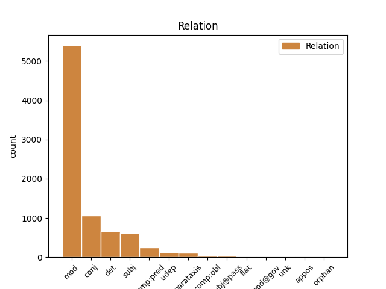
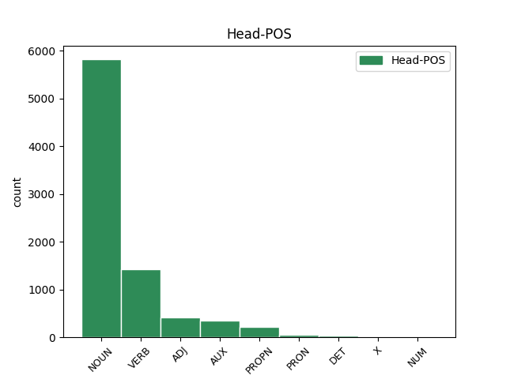
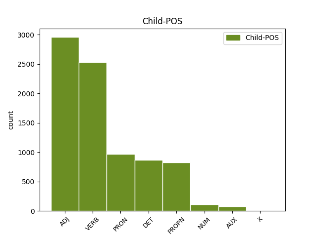

Distribution of features within this leaf



Agreement Rules sorted by frequency.
- When the dependent token is the modifer(mod) of the head token, and the dependent token is ADJ.
1 23 _ _ _ _ 0 _ _ _
2 . _ _ _ _ 0 _ _ _
3 Kalendoriniams _ _ _ _ 0 _ _ _
4 metams _ _ _ _ 0 _ _ _
5 pasibaigus _ _ _ _ 0 _ _ _
6 , _ _ _ _ 0 _ _ _
7 Komiteto _ _ _ _ 0 _ _ _
8 sekretorius _ _ _ _ 0 _ _ _
9 turimus _ _ _ _ 0 _ _ _
10 dokumentus _ _ _ _ 0 _ _ _
11 , _ _ _ _ 0 _ _ _
12 susijusius _ _ _ _ 0 _ _ _
13 su _ _ _ _ 0 _ _ _
14 Komiteto _ _ _ _ 0 _ _ _
15 posėdžiais _ _ _ _ 0 _ _ _
16 , _ _ _ _ 0 _ _ _
17 perduoda _ _ _ _ 0 _ _ _
18 saugoti _ _ _ _ 0 _ _ _
19 Aplinkos _ _ _ _ 0 _ _ _
20 ministerijai _ _ _ _ 0 _ _ _
21 , _ _ _ _ 0 _ _ _
22 kur _ _ _ _ 0 _ _ _
23 jie _ _ _ _ 0 _ _ _
24 saugomi _ _ _ _ 0 _ _ _
25 5 _ _ _ _ 0 _ _ _
26 metus _ _ _ _ 0 _ _ _
27 , _ _ _ _ 0 _ _ _
28 vadovaujantis _ _ _ _ 0 _ _ _
29 Lietuvos _ _ _ _ 0 _ _ _
30 archyvų _ _ _ _ 0 _ _ _
31 departamento _ _ _ _ 0 _ _ _
32 prie _ _ _ _ 0 _ _ _
33 Lietuvos _ _ _ _ 0 _ _ _
34 Respublikos _ _ _ _ 0 _ _ _
35 Vyriausybės _ _ _ _ 0 _ _ _
36 1997 _ _ _ _ 0 _ _ _
37 m _ _ _ _ 0 _ _ _
38 . _ _ _ _ 0 _ _ _
39 rugpjūčio _ _ _ _ 0 _ _ _
40 15 _ _ _ _ 0 _ _ _
41 d _ _ _ _ 0 _ _ _
42 . _ _ _ _ 0 _ _ _
43 įsakymu _ _ _ _ 0 _ _ _
44 Nr _ _ _ _ 0 _ _ _
45 . _ _ _ _ 0 _ _ _
46 38 _ _ _ _ 0 _ _ _
47 „ _ _ _ _ 0 _ _ _
48 Dėl _ _ _ _ 0 _ _ _
49 bendrųjų bendras ADJ bdv.nelygin.įvardž.vyr.dgs.K. Case=Gen|Definite=Def|Degree=Pos|Gender=Masc|Number=Plur 52 mod _ _
50 dokumentų _ _ _ _ 0 _ _ _
51 saugojimo _ _ _ _ 0 _ _ _
52 terminų terminas NOUN dkt.vyr.dgs.K. Case=Gen|Gender=Masc|Number=Plur 0 _ _ _
53 “ _ _ _ _ 0 _ _ _
54 ( _ _ _ _ 0 _ _ _
55 Žin _ _ _ _ 0 _ _ _
56 . _ _ _ _ 0 _ _ _
57 , _ _ _ _ 0 _ _ _
58 1997 _ _ _ _ 0 _ _ _
59 , _ _ _ _ 0 _ _ _
60 Nr _ _ _ _ 0 _ _ _
61 . _ _ _ _ 0 _ _ _
62 78-006 _ _ _ _ 0 _ _ _
63 ) _ _ _ _ 0 _ _ _
64 . _ _ _ _ 0 _ _ _
1 Ginčai _ _ _ _ 0 _ _ _
2 dėl _ _ _ _ 0 _ _ _
3 šio _ _ _ _ 0 _ _ _
4 reglamento _ _ _ _ 0 _ _ _
5 taikymo _ _ _ _ 0 _ _ _
6 nagrinėjami _ _ _ _ 0 _ _ _
7 įstatymų _ _ _ _ 0 _ _ _
8 nustatyta nustatyti VERB vksm.dlv.neveik.būt.mot.vns.Įn. Case=Ins|Definite=Ind|Gender=Fem|Number=Sing|Polarity=Pos|Tense=Past|VerbForm=Part|Voice=Pass 9 mod _ _
9 tvarka tvarka NOUN dkt.mot.vns.Įn. Case=Ins|Gender=Fem|Number=Sing 0 _ _ _
10 . _ _ _ _ 0 _ _ _
1 Ginčai _ _ _ _ 0 _ _ _
2 dėl _ _ _ _ 0 _ _ _
3 šio šis DET įv.vyr.vns.K. Case=Gen|Definite=Ind|Gender=Masc|Number=Sing|PronType=Dem 4 det _ _
4 reglamento reglamentas NOUN dkt.vyr.vns.K. Case=Gen|Gender=Masc|Number=Sing 0 _ _ _
5 taikymo _ _ _ _ 0 _ _ _
6 nagrinėjami _ _ _ _ 0 _ _ _
7 įstatymų _ _ _ _ 0 _ _ _
8 nustatyta _ _ _ _ 0 _ _ _
9 tvarka _ _ _ _ 0 _ _ _
10 . _ _ _ _ 0 _ _ _
1 Protokole _ _ _ _ 0 _ _ _
2 turi _ _ _ _ 0 _ _ _
3 būti _ _ _ _ 0 _ _ _
4 nurodyta _ _ _ _ 0 _ _ _
5 data _ _ _ _ 0 _ _ _
6 , _ _ _ _ 0 _ _ _
7 protokolo _ _ _ _ 0 _ _ _
8 registravimo _ _ _ _ 0 _ _ _
9 numeris _ _ _ _ 0 _ _ _
10 , _ _ _ _ 0 _ _ _
11 Komiteto _ _ _ _ 0 _ _ _
12 posėdžio _ _ _ _ 0 _ _ _
13 dalyviai _ _ _ _ 0 _ _ _
14 , _ _ _ _ 0 _ _ _
15 svarstyti _ _ _ _ 0 _ _ _
16 klausimai _ _ _ _ 0 _ _ _
17 , _ _ _ _ 0 _ _ _
18 kalbėję kalbėti VERB vksm.dlv.veik.būt-k.vyr.dgs.V. Aspect=Perf|Case=Nom|Definite=Ind|Gender=Masc|Number=Plur|Polarity=Pos|Tense=Past|VerbForm=Part|Voice=Act 0 _ _ _
19 bei _ _ _ _ 0 _ _ _
20 klausimus _ _ _ _ 0 _ _ _
21 pateikę pateikti VERB vksm.dlv.veik.būt-k.vyr.dgs.V. Aspect=Perf|Case=Nom|Definite=Ind|Gender=Masc|Number=Plur|Polarity=Pos|Tense=Past|VerbForm=Part|Voice=Act 18 conj _ _
22 asmenys _ _ _ _ 0 _ _ _
23 , _ _ _ _ 0 _ _ _
24 balsavimo _ _ _ _ 0 _ _ _
25 rezultatai _ _ _ _ 0 _ _ _
26 ir _ _ _ _ 0 _ _ _
27 priimti _ _ _ _ 0 _ _ _
28 sprendimai _ _ _ _ 0 _ _ _
29 . _ _ _ _ 0 _ _ _
1 23 _ _ _ _ 0 _ _ _
2 . _ _ _ _ 0 _ _ _
3 Kalendoriniams _ _ _ _ 0 _ _ _
4 metams _ _ _ _ 0 _ _ _
5 pasibaigus _ _ _ _ 0 _ _ _
6 , _ _ _ _ 0 _ _ _
7 Komiteto _ _ _ _ 0 _ _ _
8 sekretorius _ _ _ _ 0 _ _ _
9 turimus _ _ _ _ 0 _ _ _
10 dokumentus _ _ _ _ 0 _ _ _
11 , _ _ _ _ 0 _ _ _
12 susijusius _ _ _ _ 0 _ _ _
13 su _ _ _ _ 0 _ _ _
14 Komiteto _ _ _ _ 0 _ _ _
15 posėdžiais _ _ _ _ 0 _ _ _
16 , _ _ _ _ 0 _ _ _
17 perduoda _ _ _ _ 0 _ _ _
18 saugoti _ _ _ _ 0 _ _ _
19 Aplinkos _ _ _ _ 0 _ _ _
20 ministerijai _ _ _ _ 0 _ _ _
21 , _ _ _ _ 0 _ _ _
22 kur _ _ _ _ 0 _ _ _
23 jie _ _ _ _ 0 _ _ _
24 saugomi _ _ _ _ 0 _ _ _
25 5 _ _ _ _ 0 _ _ _
26 metus _ _ _ _ 0 _ _ _
27 , _ _ _ _ 0 _ _ _
28 vadovaujantis _ _ _ _ 0 _ _ _
29 Lietuvos _ _ _ _ 0 _ _ _
30 archyvų _ _ _ _ 0 _ _ _
31 departamento _ _ _ _ 0 _ _ _
32 prie _ _ _ _ 0 _ _ _
33 Lietuvos Lietuva PROPN dkt.tikr.mot.vns.K. Case=Gen|Gender=Fem|Number=Sing 34 mod _ _
34 Respublikos respublika NOUN dkt.mot.vns.K. Case=Gen|Gender=Fem|Number=Sing 0 _ _ _
35 Vyriausybės _ _ _ _ 0 _ _ _
36 1997 _ _ _ _ 0 _ _ _
37 m _ _ _ _ 0 _ _ _
38 . _ _ _ _ 0 _ _ _
39 rugpjūčio _ _ _ _ 0 _ _ _
40 15 _ _ _ _ 0 _ _ _
41 d _ _ _ _ 0 _ _ _
42 . _ _ _ _ 0 _ _ _
43 įsakymu _ _ _ _ 0 _ _ _
44 Nr _ _ _ _ 0 _ _ _
45 . _ _ _ _ 0 _ _ _
46 38 _ _ _ _ 0 _ _ _
47 „ _ _ _ _ 0 _ _ _
48 Dėl _ _ _ _ 0 _ _ _
49 bendrųjų _ _ _ _ 0 _ _ _
50 dokumentų _ _ _ _ 0 _ _ _
51 saugojimo _ _ _ _ 0 _ _ _
52 terminų _ _ _ _ 0 _ _ _
53 “ _ _ _ _ 0 _ _ _
54 ( _ _ _ _ 0 _ _ _
55 Žin _ _ _ _ 0 _ _ _
56 . _ _ _ _ 0 _ _ _
57 , _ _ _ _ 0 _ _ _
58 1997 _ _ _ _ 0 _ _ _
59 , _ _ _ _ 0 _ _ _
60 Nr _ _ _ _ 0 _ _ _
61 . _ _ _ _ 0 _ _ _
62 78-006 _ _ _ _ 0 _ _ _
63 ) _ _ _ _ 0 _ _ _
64 . _ _ _ _ 0 _ _ _
1 Balsuojant _ _ _ _ 0 _ _ _
2 kiekvienas _ _ _ _ 0 _ _ _
3 Komiteto _ _ _ _ 0 _ _ _
4 narys _ _ _ _ 0 _ _ _
5 turi _ _ _ _ 0 _ _ _
6 po _ _ _ _ 0 _ _ _
7 vieną vienas PRON įv.vyr.vns.G. Case=Acc|Definite=Ind|Gender=Masc|Number=Sing|PronType=Ind 8 mod _ _
8 balsą balsas NOUN dkt.vyr.vns.G. Case=Acc|Gender=Masc|Number=Sing 0 _ _ _
9 . _ _ _ _ 0 _ _ _
1 Viena vienas PRON įv.mot.vns.V. Case=Nom|Definite=Ind|Gender=Fem|Number=Sing|PronType=Ind 9 subj _ _
2 iš _ _ _ _ 0 _ _ _
3 prioritetinių _ _ _ _ 0 _ _ _
4 2006 _ _ _ _ 0 _ _ _
5 m _ _ _ _ 0 _ _ _
6 . _ _ _ _ 0 _ _ _
7 veiklos _ _ _ _ 0 _ _ _
8 krypčių _ _ _ _ 0 _ _ _
9 buvo būti VERB vksm.asm.tiesiog.būt-k.vns.3. Aspect=Perf|Mood=Ind|Number=Sing|Person=3|Polarity=Pos|Tense=Past|VerbForm=Fin 0 _ _ _
10 stiprinti _ _ _ _ 0 _ _ _
11 prevencinę _ _ _ _ 0 _ _ _
12 veiklą _ _ _ _ 0 _ _ _
13 . _ _ _ _ 0 _ _ _
1 13 _ _ _ _ 0 _ _ _
2 . _ _ _ _ 0 _ _ _
3 Į _ _ _ _ 0 _ _ _
4 Komiteto _ _ _ _ 0 _ _ _
5 posėdžius _ _ _ _ 0 _ _ _
6 gali _ _ _ _ 0 _ _ _
7 būti _ _ _ _ 0 _ _ _
8 kviečiami _ _ _ _ 0 _ _ _
9 Aplinkos _ _ _ _ 0 _ _ _
10 ministerijos _ _ _ _ 0 _ _ _
11 , _ _ _ _ 0 _ _ _
12 jai _ _ _ _ 0 _ _ _
13 pavaldžių _ _ _ _ 0 _ _ _
14 ar _ _ _ _ 0 _ _ _
15 jos _ _ _ _ 0 _ _ _
16 reguliavimo _ _ _ _ 0 _ _ _
17 sričiai _ _ _ _ 0 _ _ _
18 priskirtų _ _ _ _ 0 _ _ _
19 institucijų _ _ _ _ 0 _ _ _
20 ir _ _ _ _ 0 _ _ _
21 organizacijų _ _ _ _ 0 _ _ _
22 specialistai _ _ _ _ 0 _ _ _
23 , _ _ _ _ 0 _ _ _
24 kitų _ _ _ _ 0 _ _ _
25 valstybės _ _ _ _ 0 _ _ _
26 ir _ _ _ _ 0 _ _ _
27 vietos _ _ _ _ 0 _ _ _
28 savivaldos _ _ _ _ 0 _ _ _
29 institucijų _ _ _ _ 0 _ _ _
30 pareigūnai _ _ _ _ 0 _ _ _
31 , _ _ _ _ 0 _ _ _
32 nepriklausomi _ _ _ _ 0 _ _ _
33 ekspertai _ _ _ _ 0 _ _ _
34 , _ _ _ _ 0 _ _ _
35 visuomeninių visuomeninis ADJ bdv.nelygin.mot.dgs.K. Case=Gen|Definite=Ind|Degree=Pos|Gender=Fem|Number=Plur 0 _ _ _
36 ir _ _ _ _ 0 _ _ _
37 nevyriausybinių nevyriausybinis ADJ bdv.nelygin.mot.dgs.K. Case=Gen|Definite=Ind|Degree=Pos|Gender=Fem|Number=Plur 35 conj _ _
38 organizacijų _ _ _ _ 0 _ _ _
39 atstovai _ _ _ _ 0 _ _ _
40 . _ _ _ _ 0 _ _ _
1 Dėl _ _ _ _ 0 _ _ _
2 svarbių _ _ _ _ 0 _ _ _
3 priežasčių _ _ _ _ 0 _ _ _
4 negalintis _ _ _ _ 0 _ _ _
5 posėdyje _ _ _ _ 0 _ _ _
6 dalyvauti _ _ _ _ 0 _ _ _
7 Komiteto _ _ _ _ 0 _ _ _
8 narys _ _ _ _ 0 _ _ _
9 gali _ _ _ _ 0 _ _ _
10 raštu _ _ _ _ 0 _ _ _
11 pateikti _ _ _ _ 0 _ _ _
12 savo _ _ _ _ 0 _ _ _
13 nuomonę _ _ _ _ 0 _ _ _
14 svarstomais _ _ _ _ 0 _ _ _
15 klausimais _ _ _ _ 0 _ _ _
16 , _ _ _ _ 0 _ _ _
17 kuri _ _ _ _ 0 _ _ _
18 turi turėti VERB vksm.asm.tiesiog.es.vns.3. Mood=Ind|Number=Sing|Person=3|Polarity=Pos|Tense=Pres|VerbForm=Fin 0 _ _ _
19 būti _ _ _ _ 0 _ _ _
20 paskelbta paskelbti VERB vksm.dlv.neveik.būt.mot.vns.V. Case=Nom|Definite=Ind|Gender=Fem|Number=Sing|Polarity=Pos|Tense=Past|VerbForm=Part|Voice=Pass 18 comp:pred _ _
21 Komiteto _ _ _ _ 0 _ _ _
22 posėdyje _ _ _ _ 0 _ _ _
23 ir _ _ _ _ 0 _ _ _
24 įrašoma _ _ _ _ 0 _ _ _
25 į _ _ _ _ 0 _ _ _
26 jo _ _ _ _ 0 _ _ _
27 protokolą _ _ _ _ 0 _ _ _
28 . _ _ _ _ 0 _ _ _
1 Toks _ _ _ _ 0 _ _ _
2 pokalbių _ _ _ _ 0 _ _ _
3 įrašymas _ _ _ _ 0 _ _ _
4 pažeidžia _ _ _ _ 0 _ _ _
5 Lietuvos _ _ _ _ 0 _ _ _
6 Respublikos _ _ _ _ 0 _ _ _
7 elektroninių _ _ _ _ 0 _ _ _
8 ryšių _ _ _ _ 0 _ _ _
9 įstatymo _ _ _ _ 0 _ _ _
10 63 _ _ _ _ 0 _ _ _
11 str _ _ _ _ 0 _ _ _
12 . _ _ _ _ 0 _ _ _
13 1 _ _ _ _ 0 _ _ _
14 d _ _ _ _ 0 _ _ _
15 . _ _ _ _ 0 _ _ _
16 reikalavimus _ _ _ _ 0 _ _ _
17 , _ _ _ _ 0 _ _ _
18 nes _ _ _ _ 0 _ _ _
19 pokalbiams _ _ _ _ 0 _ _ _
20 įrašyti _ _ _ _ 0 _ _ _
21 nėra nebūti VERB vksm.asm.neig.tiesiog.es.vns.3. Mood=Ind|Number=Sing|Person=3|Polarity=Neg|Tense=Pres|VerbForm=Fin 22 subj _ _
22 gaunamas gauti VERB vksm.dlv.neveik.es.vyr.vns.V. Case=Nom|Definite=Ind|Gender=Masc|Number=Sing|Polarity=Pos|Tense=Pres|VerbForm=Part|Voice=Pass 0 _ _ _
23 skambinančio _ _ _ _ 0 _ _ _
24 asmens _ _ _ _ 0 _ _ _
25 sutikimas _ _ _ _ 0 _ _ _
26 . _ _ _ _ 0 _ _ _
1 Dėl _ _ _ _ 0 _ _ _
2 svarbių _ _ _ _ 0 _ _ _
3 priežasčių _ _ _ _ 0 _ _ _
4 negalintis _ _ _ _ 0 _ _ _
5 posėdyje _ _ _ _ 0 _ _ _
6 dalyvauti _ _ _ _ 0 _ _ _
7 Komiteto _ _ _ _ 0 _ _ _
8 narys _ _ _ _ 0 _ _ _
9 gali _ _ _ _ 0 _ _ _
10 raštu _ _ _ _ 0 _ _ _
11 pateikti _ _ _ _ 0 _ _ _
12 savo _ _ _ _ 0 _ _ _
13 nuomonę _ _ _ _ 0 _ _ _
14 svarstomais _ _ _ _ 0 _ _ _
15 klausimais _ _ _ _ 0 _ _ _
16 , _ _ _ _ 0 _ _ _
17 kuri kuris DET įv.mot.vns.V. Case=Nom|Definite=Ind|Gender=Fem|Number=Sing|PronType=Int 18 subj _ _
18 turi turėti VERB vksm.asm.tiesiog.es.vns.3. Mood=Ind|Number=Sing|Person=3|Polarity=Pos|Tense=Pres|VerbForm=Fin 0 _ _ _
19 būti _ _ _ _ 0 _ _ _
20 paskelbta _ _ _ _ 0 _ _ _
21 Komiteto _ _ _ _ 0 _ _ _
22 posėdyje _ _ _ _ 0 _ _ _
23 ir _ _ _ _ 0 _ _ _
24 įrašoma _ _ _ _ 0 _ _ _
25 į _ _ _ _ 0 _ _ _
26 jo _ _ _ _ 0 _ _ _
27 protokolą _ _ _ _ 0 _ _ _
28 . _ _ _ _ 0 _ _ _
1 Liepos _ _ _ _ 0 _ _ _
2 mėn _ _ _ _ 0 _ _ _
3 . _ _ _ _ 0 _ _ _
4 Šengeno _ _ _ _ 0 _ _ _
5 jungtinės _ _ _ _ 0 _ _ _
6 priežiūros _ _ _ _ 0 _ _ _
7 institucijos _ _ _ _ 0 _ _ _
8 kvietimu _ _ _ _ 0 _ _ _
9 Inspekcijos _ _ _ _ 0 _ _ _
10 atstovas _ _ _ _ 0 _ _ _
11 dalyvavo _ _ _ _ 0 _ _ _
12 Maltos Malta PROPN dkt.tikr.mot.vns.K. Case=Gen|Gender=Fem|Number=Sing 0 _ _ _
13 ir _ _ _ _ 0 _ _ _
14 Kipro Kipras PROPN dkt.tikr.vyr.vns.K. Case=Gen|Gender=Masc|Number=Sing 12 conj _ _
15 Šengeno _ _ _ _ 0 _ _ _
16 vertinime _ _ _ _ 0 _ _ _
17 . _ _ _ _ 0 _ _ _
1 3 _ _ _ _ 0 _ _ _
2 . _ _ _ _ 0 _ _ _
3 Viešąsias _ _ _ _ 0 _ _ _
4 paslaugas _ _ _ _ 0 _ _ _
5 verslui _ _ _ _ 0 _ _ _
6 teikiančiai _ _ _ _ 0 _ _ _
7 viešajai _ _ _ _ 0 _ _ _
8 įstaigai _ _ _ _ 0 _ _ _
9 , _ _ _ _ 0 _ _ _
10 kurios _ _ _ _ 0 _ _ _
11 savininkė _ _ _ _ 0 _ _ _
12 arba _ _ _ _ 0 _ _ _
13 viena _ _ _ _ 0 _ _ _
14 iš _ _ _ _ 0 _ _ _
15 dalininkų _ _ _ _ 0 _ _ _
16 yra _ _ _ _ 0 _ _ _
17 valstybė _ _ _ _ 0 _ _ _
18 ir _ _ _ _ 0 _ _ _
19 ( _ _ _ _ 0 _ _ _
20 arba _ _ _ _ 0 _ _ _
21 ) _ _ _ _ 0 _ _ _
22 savivaldybė _ _ _ _ 0 _ _ _
23 , _ _ _ _ 0 _ _ _
24 panaudos _ _ _ _ 0 _ _ _
25 pagrindais _ _ _ _ 0 _ _ _
26 perduotą _ _ _ _ 0 _ _ _
27 valstybės _ _ _ _ 0 _ _ _
28 ar _ _ _ _ 0 _ _ _
29 savivaldybės _ _ _ _ 0 _ _ _
30 turtą _ _ _ _ 0 _ _ _
31 arba _ _ _ _ 0 _ _ _
32 jo _ _ _ _ 0 _ _ _
33 dalį _ _ _ _ 0 _ _ _
34 šio _ _ _ _ 0 _ _ _
35 turto _ _ _ _ 0 _ _ _
36 valdytojas _ _ _ _ 0 _ _ _
37 , _ _ _ _ 0 _ _ _
38 vadovaudamasis _ _ _ _ 0 _ _ _
39 Valstybės _ _ _ _ 0 _ _ _
40 ir _ _ _ _ 0 _ _ _
41 savivaldybių _ _ _ _ 0 _ _ _
42 turto _ _ _ _ 0 _ _ _
43 valdymo _ _ _ _ 0 _ _ _
44 , _ _ _ _ 0 _ _ _
45 naudojimo _ _ _ _ 0 _ _ _
46 ir _ _ _ _ 0 _ _ _
47 disponavimo _ _ _ _ 0 _ _ _
48 juo _ _ _ _ 0 _ _ _
49 įstatymu _ _ _ _ 0 _ _ _
50 , _ _ _ _ 0 _ _ _
51 viešosios _ _ _ _ 0 _ _ _
52 įstaigos _ _ _ _ 0 _ _ _
53 siūlymu _ _ _ _ 0 _ _ _
54 gali _ _ _ _ 0 _ _ _
55 išnuomoti _ _ _ _ 0 _ _ _
56 tretiesiems trečias NUM sktv.raid.kelint.įvardž.vyr.dgs.N. Case=Dat|Definite=Def|Gender=Masc|Number=Plur|NumForm=Word|NumType=Ord 57 mod _ _
57 asmenims asmuo NOUN dkt.vyr.dgs.N. Case=Dat|Gender=Masc|Number=Plur 0 _ _ _
58 – _ _ _ _ 0 _ _ _
59 smulkiojo _ _ _ _ 0 _ _ _
60 ir _ _ _ _ 0 _ _ _
61 vidutinio _ _ _ _ 0 _ _ _
62 verslo _ _ _ _ 0 _ _ _
63 subjektams _ _ _ _ 0 _ _ _
64 tais _ _ _ _ 0 _ _ _
65 atvejais _ _ _ _ 0 _ _ _
66 , _ _ _ _ 0 _ _ _
67 kai _ _ _ _ 0 _ _ _
68 turto _ _ _ _ 0 _ _ _
69 nuoma _ _ _ _ 0 _ _ _
70 yra _ _ _ _ 0 _ _ _
71 neatskiriama _ _ _ _ 0 _ _ _
72 viešųjų _ _ _ _ 0 _ _ _
73 paslaugų _ _ _ _ 0 _ _ _
74 verslui _ _ _ _ 0 _ _ _
75 dalis _ _ _ _ 0 _ _ _
76 ir _ _ _ _ 0 _ _ _
77 yra _ _ _ _ 0 _ _ _
78 būtina _ _ _ _ 0 _ _ _
79 tinkamai _ _ _ _ 0 _ _ _
80 viešųjų _ _ _ _ 0 _ _ _
81 paslaugų _ _ _ _ 0 _ _ _
82 verslui _ _ _ _ 0 _ _ _
83 kokybei _ _ _ _ 0 _ _ _
84 užtikrinti _ _ _ _ 0 _ _ _
85 . _ _ _ _ 0 _ _ _
1 22 _ _ _ _ 0 _ _ _
2 . _ _ _ _ 0 _ _ _
3 Sekretorius _ _ _ _ 0 _ _ _
4 yra būti AUX vksm.asm.tiesiog.es.vns.3. Mood=Ind|Number=Sing|Person=3|Polarity=Pos|Tense=Pres|VerbForm=Fin 0 _ _ _
5 atsakingas atsakingas ADJ bdv.nelygin.vyr.vns.V. Case=Nom|Definite=Ind|Degree=Pos|Gender=Masc|Number=Sing 4 comp:pred _ _
6 už _ _ _ _ 0 _ _ _
7 dokumentų _ _ _ _ 0 _ _ _
8 , _ _ _ _ 0 _ _ _
9 susijusių _ _ _ _ 0 _ _ _
10 su _ _ _ _ 0 _ _ _
11 Komiteto _ _ _ _ 0 _ _ _
12 posėdžiais _ _ _ _ 0 _ _ _
13 , _ _ _ _ 0 _ _ _
14 tvarkymą _ _ _ _ 0 _ _ _
15 ir _ _ _ _ 0 _ _ _
16 tolesnį _ _ _ _ 0 _ _ _
17 saugojimą _ _ _ _ 0 _ _ _
18 teisės _ _ _ _ 0 _ _ _
19 aktų _ _ _ _ 0 _ _ _
20 nustatyta _ _ _ _ 0 _ _ _
21 tvarka _ _ _ _ 0 _ _ _
22 . _ _ _ _ 0 _ _ _
1 6.2 _ _ _ _ 0 _ _ _
2 . _ _ _ _ 0 _ _ _
3 nagrinėja nagrinėti VERB vksm.asm.tiesiog.es.vns.3. Mood=Ind|Number=Sing|Person=3|Polarity=Pos|Tense=Pres|VerbForm=Fin 10 parataxis _ _
4 ir _ _ _ _ 0 _ _ _
5 vertina _ _ _ _ 0 _ _ _
6 Programos _ _ _ _ 0 _ _ _
7 įgyvendinimo _ _ _ _ 0 _ _ _
8 ataskaitas _ _ _ _ 0 _ _ _
9 , _ _ _ _ 0 _ _ _
10 teikia teikti VERB vksm.asm.tiesiog.es.vns.3. Mood=Ind|Number=Sing|Person=3|Polarity=Pos|Tense=Pres|VerbForm=Fin 0 _ _ _
11 pasiūlymus _ _ _ _ 0 _ _ _
12 Aplinkos _ _ _ _ 0 _ _ _
13 ministerijai _ _ _ _ 0 _ _ _
14 dėl _ _ _ _ 0 _ _ _
15 Programos _ _ _ _ 0 _ _ _
16 ir _ _ _ _ 0 _ _ _
17 jos _ _ _ _ 0 _ _ _
18 įgyvendinimo _ _ _ _ 0 _ _ _
19 teisės _ _ _ _ 0 _ _ _
20 aktų _ _ _ _ 0 _ _ _
21 pakeitimo _ _ _ _ 0 _ _ _
22 ar _ _ _ _ 0 _ _ _
23 papildymo _ _ _ _ 0 _ _ _
24 ; _ _ _ _ 0 _ _ _
1 Tarptautiniuose _ _ _ _ 0 _ _ _
2 renginiuose _ _ _ _ 0 _ _ _
3 ir _ _ _ _ 0 _ _ _
4 darbo _ _ _ _ 0 _ _ _
5 grupėse _ _ _ _ 0 _ _ _
6 skaityti _ _ _ _ 0 _ _ _
7 šie _ _ _ _ 0 _ _ _
8 pranešimai _ _ _ _ 0 _ _ _
9 : _ _ _ _ 0 _ _ _
10 „ _ _ _ _ 0 _ _ _
11 Duomenų _ _ _ _ 0 _ _ _
12 apsauga _ _ _ _ 0 _ _ _
13 Lietuvoje _ _ _ _ 0 _ _ _
14 “ _ _ _ _ 0 _ _ _
15 , _ _ _ _ 0 _ _ _
16 „ _ _ _ _ 0 _ _ _
17 E-valdžios _ _ _ _ 0 _ _ _
18 plėtra plėtra NOUN dkt.mot.vns.V. Case=Nom|Gender=Fem|Number=Sing 0 _ _ _
19 Lietuvoje Lietuva PROPN dkt.tikr.mot.vns.Vt. Case=Loc|Gender=Fem|Number=Sing 18 udep _ SpaceAfter=No
20 : _ _ _ _ 0 _ _ _
21 asmens _ _ _ _ 0 _ _ _
22 tapatybės _ _ _ _ 0 _ _ _
23 nustatymas _ _ _ _ 0 _ _ _
24 ir _ _ _ _ 0 _ _ _
25 duomenų _ _ _ _ 0 _ _ _
26 apsauga _ _ _ _ 0 _ _ _
27 “ _ _ _ _ 0 _ _ _
28 , _ _ _ _ 0 _ _ _
29 „ _ _ _ _ 0 _ _ _
30 Tiesioginė _ _ _ _ 0 _ _ _
31 rinkodara _ _ _ _ 0 _ _ _
32 ir _ _ _ _ 0 _ _ _
33 privatumo _ _ _ _ 0 _ _ _
34 problemos _ _ _ _ 0 _ _ _
35 “ _ _ _ _ 0 _ _ _
36 , _ _ _ _ 0 _ _ _
37 „ _ _ _ _ 0 _ _ _
38 Vaizdo _ _ _ _ 0 _ _ _
39 stebėjimas _ _ _ _ 0 _ _ _
40 ir _ _ _ _ 0 _ _ _
41 duomenų _ _ _ _ 0 _ _ _
42 apsauga _ _ _ _ 0 _ _ _
43 “ _ _ _ _ 0 _ _ _
44 , _ _ _ _ 0 _ _ _
45 „ _ _ _ _ 0 _ _ _
46 Duomenų _ _ _ _ 0 _ _ _
47 apsaugos _ _ _ _ 0 _ _ _
48 naujovės _ _ _ _ 0 _ _ _
49 Lietuvoje _ _ _ _ 0 _ _ _
50 “ _ _ _ _ 0 _ _ _
51 , _ _ _ _ 0 _ _ _
52 „ _ _ _ _ 0 _ _ _
53 Lietuvos _ _ _ _ 0 _ _ _
54 duomenų _ _ _ _ 0 _ _ _
55 apsaugos _ _ _ _ 0 _ _ _
56 pažanga _ _ _ _ 0 _ _ _
57 telekomunikacijose _ _ _ _ 0 _ _ _
58 “ _ _ _ _ 0 _ _ _
59 , _ _ _ _ 0 _ _ _
60 „ _ _ _ _ 0 _ _ _
61 Valstybinės _ _ _ _ 0 _ _ _
62 duomenų _ _ _ _ 0 _ _ _
63 apsaugos _ _ _ _ 0 _ _ _
64 inspekcijos _ _ _ _ 0 _ _ _
65 patirtis _ _ _ _ 0 _ _ _
66 taikant _ _ _ _ 0 _ _ _
67 Direktyvos _ _ _ _ 0 _ _ _
68 2002 _ _ _ _ 0 _ _ _
69 58 _ _ _ _ 0 _ _ _
70 EB _ _ _ _ 0 _ _ _
71 5 _ _ _ _ 0 _ _ _
72 straipsnio _ _ _ _ 0 _ _ _
73 2 _ _ _ _ 0 _ _ _
74 dalyje _ _ _ _ 0 _ _ _
75 numatytą _ _ _ _ 0 _ _ _
76 išimtį _ _ _ _ 0 _ _ _
77 “ _ _ _ _ 0 _ _ _
78 , _ _ _ _ 0 _ _ _
79 „ _ _ _ _ 0 _ _ _
80 Duomenų _ _ _ _ 0 _ _ _
81 apsaugos _ _ _ _ 0 _ _ _
82 problemos _ _ _ _ 0 _ _ _
83 atliekant _ _ _ _ 0 _ _ _
84 vaizdo _ _ _ _ 0 _ _ _
85 stebėjimą _ _ _ _ 0 _ _ _
86 “ _ _ _ _ 0 _ _ _
87 , _ _ _ _ 0 _ _ _
88 „ _ _ _ _ 0 _ _ _
89 Įgyvendinimo _ _ _ _ 0 _ _ _
90 grupės _ _ _ _ 0 _ _ _
91 tikrinimas _ _ _ _ 0 _ _ _
92 privačiame _ _ _ _ 0 _ _ _
93 sveikatos _ _ _ _ 0 _ _ _
94 draudimo _ _ _ _ 0 _ _ _
95 sektoriuje _ _ _ _ 0 _ _ _
96 2006 _ _ _ _ 0 _ _ _
97 “ _ _ _ _ 0 _ _ _
98 . _ _ _ _ 0 _ _ _
1 „ _ _ _ _ 0 _ _ _
2 Pasaulis _ _ _ _ 0 _ _ _
3 grįžta _ _ _ _ 0 _ _ _
4 prie _ _ _ _ 0 _ _ _
5 tradicinio _ _ _ _ 0 _ _ _
6 maisto _ _ _ _ 0 _ _ _
7 , _ _ _ _ 0 _ _ _
8 o _ _ _ _ 0 _ _ _
9 lietuviams _ _ _ _ 0 _ _ _
10 geriausia _ _ _ _ 0 _ _ _
11 lietuviška _ _ _ _ 0 _ _ _
12 virtuvė _ _ _ _ 0 _ _ _
13 , _ _ _ _ 0 _ _ _
14 – _ _ _ _ 0 _ _ _
15 teigia teigti VERB vksm.asm.tiesiog.es.vns.3. Mood=Ind|Number=Sing|Person=3|Polarity=Pos|Tense=Pres|VerbForm=Fin 0 _ _ _
16 R _ _ _ _ 0 _ _ _
17 . _ _ _ _ 0 _ _ _
18 Galubauskienė Galubauskienė PROPN dkt.tikr.mot.vns.V. Case=Nom|Gender=Fem|Number=Sing 15 subj _ SpaceAfter=No
19 . _ _ _ _ 0 _ _ _
1 Parengtas _ _ _ _ 0 _ _ _
2 Lietuvos _ _ _ _ 0 _ _ _
3 Respublikos _ _ _ _ 0 _ _ _
4 asmens _ _ _ _ 0 _ _ _
5 duomenų _ _ _ _ 0 _ _ _
6 teisinės _ _ _ _ 0 _ _ _
7 apsaugos _ _ _ _ 0 _ _ _
8 įstatymo _ _ _ _ 0 _ _ _
9 pakeitimo _ _ _ _ 0 _ _ _
10 ir _ _ _ _ 0 _ _ _
11 papildymo _ _ _ _ 0 _ _ _
12 įstatymo _ _ _ _ 0 _ _ _
13 projektas projektas NOUN dkt.vyr.vns.V. Case=Nom|Gender=Masc|Number=Sing 0 _ _ _
14 , _ _ _ _ 0 _ _ _
15 kuris _ _ _ _ 0 _ _ _
16 Vyriausybės _ _ _ _ 0 _ _ _
17 2006 _ _ _ _ 0 _ _ _
18 m _ _ _ _ 0 _ _ _
19 . _ _ _ _ 0 _ _ _
20 gegužės _ _ _ _ 0 _ _ _
21 3 _ _ _ _ 0 _ _ _
22 d _ _ _ _ 0 _ _ _
23 . _ _ _ _ 0 _ _ _
24 nutarimu _ _ _ _ 0 _ _ _
25 Nr _ _ _ _ 0 _ _ _
26 . _ _ _ _ 0 _ _ _
27 408 _ _ _ _ 0 _ _ _
28 ( _ _ _ _ 0 _ _ _
29 Žin _ _ _ _ 0 _ _ _
30 . _ _ _ _ 0 _ _ _
31 , _ _ _ _ 0 _ _ _
32 2006 _ _ _ _ 0 _ _ _
33 , _ _ _ _ 0 _ _ _
34 Nr _ _ _ _ 0 _ _ _
35 . _ _ _ _ 0 _ _ _
36 50 - 1829 _ _ _ _ 0 _ _ _
37 ) _ _ _ _ 0 _ _ _
38 buvo būti AUX vksm.asm.tiesiog.būt-k.vns.3. Aspect=Perf|Mood=Ind|Number=Sing|Person=3|Polarity=Pos|Tense=Past|VerbForm=Fin 13 mod _ _
39 pateiktas _ _ _ _ 0 _ _ _
40 Seimui _ _ _ _ 0 _ _ _
41 . _ _ _ _ 0 _ _ _
1 2006 _ _ _ _ 0 _ _ _
2 m _ _ _ _ 0 _ _ _
3 . _ _ _ _ 0 _ _ _
4 pasitaikė _ _ _ _ 0 _ _ _
5 atvejų _ _ _ _ 0 _ _ _
6 , _ _ _ _ 0 _ _ _
7 kai _ _ _ _ 0 _ _ _
8 Inspekcija _ _ _ _ 0 _ _ _
9 atsisakė _ _ _ _ 0 _ _ _
10 įregistruoti _ _ _ _ 0 _ _ _
11 dėl _ _ _ _ 0 _ _ _
12 to _ _ _ _ 0 _ _ _
13 , _ _ _ _ 0 _ _ _
14 kad _ _ _ _ 0 _ _ _
15 asmens _ _ _ _ 0 _ _ _
16 duomenys _ _ _ _ 0 _ _ _
17 buvo būti AUX vksm.asm.tiesiog.būt-k.dgs.3. Aspect=Perf|Mood=Ind|Number=Plur|Person=3|Polarity=Pos|Tense=Past|VerbForm=Fin 0 _ _ _
18 tvarkomi _ _ _ _ 0 _ _ _
19 neautomatiniu _ _ _ _ 0 _ _ _
20 būdu _ _ _ _ 0 _ _ _
21 , _ _ _ _ 0 _ _ _
22 atliekamos _ _ _ _ 0 _ _ _
23 duomenų _ _ _ _ 0 _ _ _
24 tvarkytojo _ _ _ _ 0 _ _ _
25 funkcijos _ _ _ _ 0 _ _ _
26 , _ _ _ _ 0 _ _ _
27 buvo būti AUX vksm.asm.tiesiog.būt-k.dgs.3. Aspect=Perf|Mood=Ind|Number=Plur|Person=3|Polarity=Pos|Tense=Past|VerbForm=Fin 17 conj _ _
28 taikomos _ _ _ _ 0 _ _ _
29 ADTAĮ _ _ _ _ 0 _ _ _
30 nustatytos _ _ _ _ 0 _ _ _
31 išimtys _ _ _ _ 0 _ _ _
32 ir _ _ _ _ 0 _ _ _
33 kt _ _ _ _ 0 _ _ _
34 . _ _ _ _ 0 _ _ _
1 Direktorius direktorius NOUN dkt.vyr.vns.V. Case=Nom|Gender=Masc|Number=Sing 0 _ _ _
2 Algirdas _ _ _ _ 0 _ _ _
3 Kunčinas Kunčinas PROPN dkt.tikr.vyr.vns.V. Case=Nom|Gender=Masc|Number=Sing 1 flat _ _
1 Taip _ _ _ _ 0 _ _ _
2 pat _ _ _ _ 0 _ _ _
3 suorganizuotas _ _ _ _ 0 _ _ _
4 seminaras _ _ _ _ 0 _ _ _
5 „ _ _ _ _ 0 _ _ _
6 Asmens _ _ _ _ 0 _ _ _
7 duomenų _ _ _ _ 0 _ _ _
8 apsauga _ _ _ _ 0 _ _ _
9 “ _ _ _ _ 0 _ _ _
10 teisėsaugos _ _ _ _ 0 _ _ _
11 institucijoms _ _ _ _ 0 _ _ _
12 , _ _ _ _ 0 _ _ _
13 kurio kuris DET įv.vyr.vns.K. Case=Gen|Definite=Ind|Gender=Masc|Number=Sing|PronType=Int 14 mod _ _
14 metu metas NOUN dkt.vyr.vns.Įn. Case=Ins|Gender=Masc|Number=Sing 0 _ _ _
15 aptarti _ _ _ _ 0 _ _ _
16 bendrieji _ _ _ _ 0 _ _ _
17 asmens _ _ _ _ 0 _ _ _
18 duomenų _ _ _ _ 0 _ _ _
19 apsaugos _ _ _ _ 0 _ _ _
20 klausimai _ _ _ _ 0 _ _ _
21 , _ _ _ _ 0 _ _ _
22 duomenų _ _ _ _ 0 _ _ _
23 apsaugos _ _ _ _ 0 _ _ _
24 reikalavimai _ _ _ _ 0 _ _ _
25 pagal _ _ _ _ 0 _ _ _
26 Šengeno _ _ _ _ 0 _ _ _
27 konvenciją _ _ _ _ 0 _ _ _
28 . _ _ _ _ 0 _ _ _
1 Taip _ _ _ _ 0 _ _ _
2 pat _ _ _ _ 0 _ _ _
3 skaityti _ _ _ _ 0 _ _ _
4 pranešimai pranešimas NOUN dkt.vyr.dgs.V. Case=Nom|Gender=Masc|Number=Plur 0 _ _ _
5 „ _ _ _ _ 0 _ _ _
6 Asmens _ _ _ _ 0 _ _ _
7 duomenų _ _ _ _ 0 _ _ _
8 apsaugos _ _ _ _ 0 _ _ _
9 reikalavimų _ _ _ _ 0 _ _ _
10 įtaka _ _ _ _ 0 _ _ _
11 visuomenės _ _ _ _ 0 _ _ _
12 sveikatos _ _ _ _ 0 _ _ _
13 duomenų _ _ _ _ 0 _ _ _
14 sistemos _ _ _ _ 0 _ _ _
15 formavimui _ _ _ _ 0 _ _ _
16 “ _ _ _ _ 0 _ _ _
17 ( _ _ _ _ 0 _ _ _
18 Seimo _ _ _ _ 0 _ _ _
19 Nacionalinės _ _ _ _ 0 _ _ _
20 sveikatos _ _ _ _ 0 _ _ _
21 tarybos _ _ _ _ 0 _ _ _
22 posėdyje _ _ _ _ 0 _ _ _
23 ) _ _ _ _ 0 _ _ _
24 , _ _ _ _ 0 _ _ _
25 „ _ _ _ _ 0 _ _ _
26 Asmens _ _ _ _ 0 _ _ _
27 duomenų _ _ _ _ 0 _ _ _
28 tvarkymas _ _ _ _ 0 _ _ _
29 teikiant _ _ _ _ 0 _ _ _
30 turizmo _ _ _ _ 0 _ _ _
31 paslaugas _ _ _ _ 0 _ _ _
32 “ _ _ _ _ 0 _ _ _
33 ( _ _ _ _ 0 _ _ _
34 seminare _ _ _ _ 0 _ _ _
35 „ _ _ _ _ 0 _ _ _
36 Turizmo _ _ _ _ 0 _ _ _
37 paslaugų _ _ _ _ 0 _ _ _
38 kokybė _ _ _ _ 0 _ _ _
39 “ _ _ _ _ 0 _ _ _
40 ) _ _ _ _ 0 _ _ _
41 ir _ _ _ _ 0 _ _ _
42 kiti kitas PRON įv.vyr.dgs.V. Case=Nom|Definite=Ind|Gender=Masc|Number=Plur|PronType=Ind 4 conj _ _
43 duomenų _ _ _ _ 0 _ _ _
44 apsaugos _ _ _ _ 0 _ _ _
45 klausimais _ _ _ _ 0 _ _ _
46 . _ _ _ _ 0 _ _ _
1 Sveikieji sveikas ADJ bdv.nelygin.įvardž.vyr.dgs.V. Case=Nom|Definite=Def|Degree=Pos|Gender=Masc|Number=Plur 4 subj _ _
2 savo _ _ _ _ 0 _ _ _
3 mitybą _ _ _ _ 0 _ _ _
4 gali galėti VERB vksm.asm.tiesiog.es.dgs.3. Mood=Ind|Number=Plur|Person=3|Polarity=Pos|Tense=Pres|VerbForm=Fin 0 _ _ _
5 paįvairinti _ _ _ _ 0 _ _ _
6 ir _ _ _ _ 0 _ _ _
7 įvairiai _ _ _ _ 0 _ _ _
8 paruoštais _ _ _ _ 0 _ _ _
9 grybais _ _ _ _ 0 _ _ _
10 . _ _ _ _ 0 _ _ _
1 Svarbu _ _ _ _ 0 _ _ _
2 ir _ _ _ _ 0 _ _ _
3 įdomu _ _ _ _ 0 _ _ _
4 būtų _ _ _ _ 0 _ _ _
5 pažvelgti _ _ _ _ 0 _ _ _
6 , _ _ _ _ 0 _ _ _
7 kaip _ _ _ _ 0 _ _ _
8 žanrus _ _ _ _ 0 _ _ _
9 , _ _ _ _ 0 _ _ _
10 jų _ _ _ _ 0 _ _ _
11 ypatybes _ _ _ _ 0 _ _ _
12 ir _ _ _ _ 0 _ _ _
13 klasifikaciją _ _ _ _ 0 _ _ _
14 veikia _ _ _ _ 0 _ _ _
15 elektroninė _ _ _ _ 0 _ _ _
16 spaudos _ _ _ _ 0 _ _ _
17 forma _ _ _ _ 0 _ _ _
18 , _ _ _ _ 0 _ _ _
19 kuo _ _ _ _ 0 _ _ _
20 laikraštis _ _ _ _ 0 _ _ _
21 internete _ _ _ _ 0 _ _ _
22 skiriasi _ _ _ _ 0 _ _ _
23 nuo _ _ _ _ 0 _ _ _
24 jo _ _ _ _ 0 _ _ _
25 kietosios _ _ _ _ 0 _ _ _
26 kopijos _ _ _ _ 0 _ _ _
27 , _ _ _ _ 0 _ _ _
28 ar _ _ _ _ 0 _ _ _
29 juose jis PRON įv.vyr.dgs.Vt. Case=Loc|Definite=Ind|Gender=Masc|Number=Plur|Person=3|PronType=Prs 30 udep _ _
30 yra būti AUX vksm.asm.tiesiog.es.dgs.3. Mood=Ind|Number=Plur|Person=3|Polarity=Pos|Tense=Pres|VerbForm=Fin 0 _ _ _
31 tos _ _ _ _ 0 _ _ _
32 pačios _ _ _ _ 0 _ _ _
33 rubrikos _ _ _ _ 0 _ _ _
34 , _ _ _ _ 0 _ _ _
35 kurių _ _ _ _ 0 _ _ _
36 rubrikų _ _ _ _ 0 _ _ _
37 nėra _ _ _ _ 0 _ _ _
38 , _ _ _ _ 0 _ _ _
39 o _ _ _ _ 0 _ _ _
40 kurios _ _ _ _ 0 _ _ _
41 kitaip _ _ _ _ 0 _ _ _
42 vadinasi _ _ _ _ 0 _ _ _
43 ? _ _ _ _ 0 _ _ _
1 23 _ _ _ _ 0 _ _ _
2 . _ _ _ _ 0 _ _ _
3 Kalendoriniams _ _ _ _ 0 _ _ _
4 metams _ _ _ _ 0 _ _ _
5 pasibaigus _ _ _ _ 0 _ _ _
6 , _ _ _ _ 0 _ _ _
7 Komiteto _ _ _ _ 0 _ _ _
8 sekretorius _ _ _ _ 0 _ _ _
9 turimus _ _ _ _ 0 _ _ _
10 dokumentus _ _ _ _ 0 _ _ _
11 , _ _ _ _ 0 _ _ _
12 susijusius _ _ _ _ 0 _ _ _
13 su _ _ _ _ 0 _ _ _
14 Komiteto _ _ _ _ 0 _ _ _
15 posėdžiais _ _ _ _ 0 _ _ _
16 , _ _ _ _ 0 _ _ _
17 perduoda _ _ _ _ 0 _ _ _
18 saugoti _ _ _ _ 0 _ _ _
19 Aplinkos _ _ _ _ 0 _ _ _
20 ministerijai _ _ _ _ 0 _ _ _
21 , _ _ _ _ 0 _ _ _
22 kur _ _ _ _ 0 _ _ _
23 jie jie PRON įv.vyr.dgs.V. Case=Nom|Definite=Ind|Gender=Masc|Number=Plur|PronType=Ind 24 subj@pass _ _
24 saugomi saugoti VERB vksm.dlv.neveik.es.vyr.dgs.V. Case=Nom|Definite=Ind|Gender=Masc|Number=Plur|Polarity=Pos|Tense=Pres|VerbForm=Part|Voice=Pass 0 _ _ _
25 5 _ _ _ _ 0 _ _ _
26 metus _ _ _ _ 0 _ _ _
27 , _ _ _ _ 0 _ _ _
28 vadovaujantis _ _ _ _ 0 _ _ _
29 Lietuvos _ _ _ _ 0 _ _ _
30 archyvų _ _ _ _ 0 _ _ _
31 departamento _ _ _ _ 0 _ _ _
32 prie _ _ _ _ 0 _ _ _
33 Lietuvos _ _ _ _ 0 _ _ _
34 Respublikos _ _ _ _ 0 _ _ _
35 Vyriausybės _ _ _ _ 0 _ _ _
36 1997 _ _ _ _ 0 _ _ _
37 m _ _ _ _ 0 _ _ _
38 . _ _ _ _ 0 _ _ _
39 rugpjūčio _ _ _ _ 0 _ _ _
40 15 _ _ _ _ 0 _ _ _
41 d _ _ _ _ 0 _ _ _
42 . _ _ _ _ 0 _ _ _
43 įsakymu _ _ _ _ 0 _ _ _
44 Nr _ _ _ _ 0 _ _ _
45 . _ _ _ _ 0 _ _ _
46 38 _ _ _ _ 0 _ _ _
47 „ _ _ _ _ 0 _ _ _
48 Dėl _ _ _ _ 0 _ _ _
49 bendrųjų _ _ _ _ 0 _ _ _
50 dokumentų _ _ _ _ 0 _ _ _
51 saugojimo _ _ _ _ 0 _ _ _
52 terminų _ _ _ _ 0 _ _ _
53 “ _ _ _ _ 0 _ _ _
54 ( _ _ _ _ 0 _ _ _
55 Žin _ _ _ _ 0 _ _ _
56 . _ _ _ _ 0 _ _ _
57 , _ _ _ _ 0 _ _ _
58 1997 _ _ _ _ 0 _ _ _
59 , _ _ _ _ 0 _ _ _
60 Nr _ _ _ _ 0 _ _ _
61 . _ _ _ _ 0 _ _ _
62 78-006 _ _ _ _ 0 _ _ _
63 ) _ _ _ _ 0 _ _ _
64 . _ _ _ _ 0 _ _ _
1 Pagrindinis _ _ _ _ 0 _ _ _
2 programos _ _ _ _ 0 _ _ _
3 principas _ _ _ _ 0 _ _ _
4 : _ _ _ _ 0 _ _ _
5 leisk leisti VERB vksm.asm.liep.vns.2. Mood=Imp|Number=Sing|Person=2|Polarity=Pos|VerbForm=Fin 0 _ _ _
6 man aš PRON įv.vns.N. Case=Dat|Definite=Ind|Number=Sing|Person=1|PronType=Prs 5 comp:obl _ _
7 padaryti _ _ _ _ 0 _ _ _
8 pačiam _ _ _ _ 0 _ _ _
9 ir _ _ _ _ 0 _ _ _
10 aš _ _ _ _ 0 _ _ _
11 išmoksiu _ _ _ _ 0 _ _ _
12 ! _ _ _ _ 0 _ _ _
1 6.4 _ _ _ _ 0 _ _ _
2 . _ _ _ _ 0 _ _ _
3 stokojant _ _ _ _ 0 _ _ _
4 lėšų _ _ _ _ 0 _ _ _
5 valstybės _ _ _ _ 0 _ _ _
6 paramai _ _ _ _ 0 _ _ _
7 teikti _ _ _ _ 0 _ _ _
8 , _ _ _ _ 0 _ _ _
9 derina _ _ _ _ 0 _ _ _
10 Programą _ _ _ _ 0 _ _ _
11 įgyvendinančios _ _ _ _ 0 _ _ _
12 agentūros _ _ _ _ 0 _ _ _
13 sudarytą _ _ _ _ 0 _ _ _
14 pretendentų _ _ _ _ 0 _ _ _
15 valstybės _ _ _ _ 0 _ _ _
16 paramai _ _ _ _ 0 _ _ _
17 gauti _ _ _ _ 0 _ _ _
18 sąrašą _ _ _ _ 0 _ _ _
19 , _ _ _ _ 0 _ _ _
20 kuris kuris DET įv.vyr.vns.V. Case=Nom|Definite=Ind|Gender=Masc|Number=Sing|PronType=Int 21 subj@pass _ _
21 parengiamas parengti VERB vksm.dlv.neveik.es.vyr.vns.V. Case=Nom|Definite=Ind|Gender=Masc|Number=Sing|Polarity=Pos|Tense=Pres|VerbForm=Part|Voice=Pass 0 _ _ _
22 vadovaujantis _ _ _ _ 0 _ _ _
23 Lietuvos _ _ _ _ 0 _ _ _
24 Respublikos _ _ _ _ 0 _ _ _
25 Vyriausybės _ _ _ _ 0 _ _ _
26 2004 _ _ _ _ 0 _ _ _
27 m _ _ _ _ 0 _ _ _
28 . _ _ _ _ 0 _ _ _
29 rugsėjo _ _ _ _ 0 _ _ _
30 23 _ _ _ _ 0 _ _ _
31 d _ _ _ _ 0 _ _ _
32 . _ _ _ _ 0 _ _ _
33 nutarimo _ _ _ _ 0 _ _ _
34 Nr _ _ _ _ 0 _ _ _
35 . _ _ _ _ 0 _ _ _
36 1213 _ _ _ _ 0 _ _ _
37 „ _ _ _ _ 0 _ _ _
38 Dėl _ _ _ _ 0 _ _ _
39 daugiabučių _ _ _ _ 0 _ _ _
40 namų _ _ _ _ 0 _ _ _
41 modernizavimo _ _ _ _ 0 _ _ _
42 programos _ _ _ _ 0 _ _ _
43 “ _ _ _ _ 0 _ _ _
44 3 _ _ _ _ 0 _ _ _
45 punkte _ _ _ _ 0 _ _ _
46 nurodytais _ _ _ _ 0 _ _ _
47 kriterijais _ _ _ _ 0 _ _ _
48 ; _ _ _ _ 0 _ _ _
1 3 _ _ _ _ 0 _ _ _
2 . _ _ _ _ 0 _ _ _
3 Labai _ _ _ _ 0 _ _ _
4 maža _ _ _ _ 0 _ _ _
5 įmonė _ _ _ _ 0 _ _ _
6 – _ _ _ _ 0 _ _ _
7 įmonė _ _ _ _ 0 _ _ _
8 , _ _ _ _ 0 _ _ _
9 kurioje kuris DET įv.mot.vns.Vt. Case=Loc|Definite=Ind|Gender=Fem|Number=Sing|PronType=Int 10 udep _ _
10 dirba dirbti VERB vksm.asm.tiesiog.es.vns.3. Mood=Ind|Number=Sing|Person=3|Polarity=Pos|Tense=Pres|VerbForm=Fin 0 _ _ _
11 mažiau _ _ _ _ 0 _ _ _
12 kaip _ _ _ _ 0 _ _ _
13 10 _ _ _ _ 0 _ _ _
14 darbuotojų _ _ _ _ 0 _ _ _
15 ir _ _ _ _ 0 _ _ _
16 kurios _ _ _ _ 0 _ _ _
17 finansiniai _ _ _ _ 0 _ _ _
18 duomenys _ _ _ _ 0 _ _ _
19 atitinka _ _ _ _ 0 _ _ _
20 bent _ _ _ _ 0 _ _ _
21 vieną _ _ _ _ 0 _ _ _
22 iš _ _ _ _ 0 _ _ _
23 šių _ _ _ _ 0 _ _ _
24 sąlygų _ _ _ _ 0 _ _ _
25 : _ _ _ _ 0 _ _ _
1 Labai _ _ _ _ 0 _ _ _
2 svarbi _ _ _ _ 0 _ _ _
3 bet _ _ _ _ 0 _ _ _
4 kurios _ _ _ _ 0 _ _ _
5 klasifikacijos _ _ _ _ 0 _ _ _
6 nuostata _ _ _ _ 0 _ _ _
7 yra būti AUX vksm.asm.tiesiog.es.vns.3. Mood=Ind|Number=Sing|Person=3|Polarity=Pos|Tense=Pres|VerbForm=Fin 0 _ _ _
8 ta tas DET įv.mot.vns.V. Case=Nom|Definite=Ind|Gender=Fem|Number=Sing|PronType=Dem 7 comp:pred _ SpaceAfter=No
9 , _ _ _ _ 0 _ _ _
10 kad _ _ _ _ 0 _ _ _
11 paribio _ _ _ _ 0 _ _ _
12 kategorijos _ _ _ _ 0 _ _ _
13 būtų _ _ _ _ 0 _ _ _
14 lygiai _ _ _ _ 0 _ _ _
15 tokios _ _ _ _ 0 _ _ _
16 pat _ _ _ _ 0 _ _ _
17 svarbios _ _ _ _ 0 _ _ _
18 kaip _ _ _ _ 0 _ _ _
19 ir _ _ _ _ 0 _ _ _
20 centrinės _ _ _ _ 0 _ _ _
21 kategorijos _ _ _ _ 0 _ _ _
22 . _ _ _ _ 0 _ _ _
1 16 _ _ _ _ 0 _ _ _
2 . _ _ _ _ 0 _ _ _
3 Šio _ _ _ _ 0 _ _ _
4 straipsnio _ _ _ _ 0 _ _ _
5 13 _ _ _ _ 0 _ _ _
6 dalyje _ _ _ _ 0 _ _ _
7 nurodytas _ _ _ _ 0 _ _ _
8 koeficientas _ _ _ _ 0 _ _ _
9 kn _ _ _ _ 0 _ _ _
10 laikomas _ _ _ _ 0 _ _ _
11 lygiu _ _ _ _ 0 _ _ _
12 nuliui _ _ _ _ 0 _ _ _
13 , _ _ _ _ 0 _ _ _
14 jei _ _ _ _ 0 _ _ _
15 nuo _ _ _ _ 0 _ _ _
16 25 _ _ _ _ 0 _ _ _
17 iki _ _ _ _ 0 _ _ _
18 50 _ _ _ _ 0 _ _ _
19 procentų _ _ _ _ 0 _ _ _
20 įmonės _ _ _ _ 0 _ _ _
21 akcijų _ _ _ _ 0 _ _ _
22 , _ _ _ _ 0 _ _ _
23 pajų _ _ _ _ 0 _ _ _
24 ar _ _ _ _ 0 _ _ _
25 kitokių _ _ _ _ 0 _ _ _
26 dalyvavimą _ _ _ _ 0 _ _ _
27 įmonės _ _ _ _ 0 _ _ _
28 kapitale _ _ _ _ 0 _ _ _
29 žyminčių _ _ _ _ 0 _ _ _
30 kapitalo _ _ _ _ 0 _ _ _
31 dalių _ _ _ _ 0 _ _ _
32 arba _ _ _ _ 0 _ _ _
33 nuo _ _ _ _ 0 _ _ _
34 25 _ _ _ _ 0 _ _ _
35 iki _ _ _ _ 0 _ _ _
36 50 _ _ _ _ 0 _ _ _
37 procentų _ _ _ _ 0 _ _ _
38 visų _ _ _ _ 0 _ _ _
39 įmonės _ _ _ _ 0 _ _ _
40 dalyvių _ _ _ _ 0 _ _ _
41 balsų _ _ _ _ 0 _ _ _
42 tiesiogiai _ _ _ _ 0 _ _ _
43 ar _ _ _ _ 0 _ _ _
44 netiesiogiai _ _ _ _ 0 _ _ _
45 ( _ _ _ _ 0 _ _ _
46 pagal _ _ _ _ 0 _ _ _
47 balsavimo _ _ _ _ 0 _ _ _
48 sutartį _ _ _ _ 0 _ _ _
49 , _ _ _ _ 0 _ _ _
50 balsavimo _ _ _ _ 0 _ _ _
51 teisės _ _ _ _ 0 _ _ _
52 perleidimo _ _ _ _ 0 _ _ _
53 sutartį _ _ _ _ 0 _ _ _
54 , _ _ _ _ 0 _ _ _
55 įgaliojimą _ _ _ _ 0 _ _ _
56 ir _ _ _ _ 0 _ _ _
57 pan _ _ _ _ 0 _ _ _
58 . _ _ _ _ 0 _ _ _
59 ) _ _ _ _ 0 _ _ _
60 turi _ _ _ _ 0 _ _ _
61 šie _ _ _ _ 0 _ _ _
62 investuotojai _ _ _ _ 0 _ _ _
63 : _ _ _ _ 0 _ _ _
64 1 _ _ _ _ 0 _ _ _
65 ) _ _ _ _ 0 _ _ _
66 valdymo _ _ _ _ 0 _ _ _
67 įmonės _ _ _ _ 0 _ _ _
68 ar _ _ _ _ 0 _ _ _
69 investicinės _ _ _ _ 0 _ _ _
70 bendrovės _ _ _ _ 0 _ _ _
71 , _ _ _ _ 0 _ _ _
72 investuojančios _ _ _ _ 0 _ _ _
73 į _ _ _ _ 0 _ _ _
74 įmones _ _ _ _ 0 _ _ _
75 rizikos _ _ _ _ 0 _ _ _
76 kapitalo _ _ _ _ 0 _ _ _
77 kolektyvinio _ _ _ _ 0 _ _ _
78 investavimo _ _ _ _ 0 _ _ _
79 subjektų _ _ _ _ 0 _ _ _
80 lėšas _ _ _ _ 0 _ _ _
81 , _ _ _ _ 0 _ _ _
82 ir _ _ _ _ 0 _ _ _
83 neformalieji _ _ _ _ 0 _ _ _
84 investuotojai _ _ _ _ 0 _ _ _
85 , _ _ _ _ 0 _ _ _
86 jei _ _ _ _ 0 _ _ _
87 šių _ _ _ _ 0 _ _ _
88 investuotojų _ _ _ _ 0 _ _ _
89 bendra _ _ _ _ 0 _ _ _
90 investicijų _ _ _ _ 0 _ _ _
91 į _ _ _ _ 0 _ _ _
92 tą _ _ _ _ 0 _ _ _
93 pačią _ _ _ _ 0 _ _ _
94 įmonę _ _ _ _ 0 _ _ _
95 suma _ _ _ _ 0 _ _ _
96 ne _ _ _ _ 0 _ _ _
97 didesnė _ _ _ _ 0 _ _ _
98 kaip _ _ _ _ 0 _ _ _
99 4,3 _ _ _ _ 0 _ _ _
100 mln _ _ _ _ 0 _ _ _
101 . _ _ _ _ 0 _ _ _
102 litų _ _ _ _ 0 _ _ _
103 ; _ _ _ _ 0 _ _ _
104 2 _ _ _ _ 0 _ _ _
105 ) _ _ _ _ 0 _ _ _
106 mokslo _ _ _ _ 0 _ _ _
107 ir _ _ _ _ 0 _ _ _
108 studijų _ _ _ _ 0 _ _ _
109 institucijos _ _ _ _ 0 _ _ _
110 , _ _ _ _ 0 _ _ _
111 kurios _ _ _ _ 0 _ _ _
112 Lietuvos _ _ _ _ 0 _ _ _
113 Respublikos _ _ _ _ 0 _ _ _
114 įstatymų _ _ _ _ 0 _ _ _
115 nustatyta _ _ _ _ 0 _ _ _
116 tvarka _ _ _ _ 0 _ _ _
117 gali _ _ _ _ 0 _ _ _
118 investuoti _ _ _ _ 0 _ _ _
119 turtą _ _ _ _ 0 _ _ _
120 ; _ _ _ _ 0 _ _ _
121 3 _ _ _ _ 0 _ _ _
122 ) _ _ _ _ 0 _ _ _
123 profesionalieji _ _ _ _ 0 _ _ _
124 investuotojai _ _ _ _ 0 _ _ _
125 , _ _ _ _ 0 _ _ _
126 išskyrus _ _ _ _ 0 _ _ _
127 valstybių _ _ _ _ 0 _ _ _
128 centrines _ _ _ _ 0 _ _ _
129 ir _ _ _ _ 0 _ _ _
130 regionines _ _ _ _ 0 _ _ _
131 valdžios _ _ _ _ 0 _ _ _
132 institucijas _ _ _ _ 0 _ _ _
133 ; _ _ _ _ 0 _ _ _
134 4 _ _ _ _ 0 _ _ _
135 ) _ _ _ _ 0 _ _ _
136 savivaldybės _ _ _ _ 0 _ _ _
137 , _ _ _ _ 0 _ _ _
138 kurių _ _ _ _ 0 _ _ _
139 metinis _ _ _ _ 0 _ _ _
140 biudžetas _ _ _ _ 0 _ _ _
141 mažesnis _ _ _ _ 0 _ _ _
142 kaip _ _ _ _ 0 _ _ _
143 34,5 _ _ _ _ 0 _ _ _
144 mln _ _ _ _ 0 _ _ _
145 . _ _ _ _ 0 _ _ _
146 litų _ _ _ _ 0 _ _ _
147 ir _ _ _ _ 0 _ _ _
148 kurių _ _ _ _ 0 _ _ _
149 teritorijoje _ _ _ _ 0 _ _ _
150 gyvena _ _ _ _ 0 _ _ _
151 mažiau _ _ _ _ 0 _ _ _
152 kaip _ _ _ _ 0 _ _ _
153 5 _ _ _ _ 0 _ _ _
154 tūkstančiai tūkstantis NUM sktv.raid.kiek.vyr.dgs.V. Case=Nom|Gender=Masc|Number=Plur|NumForm=Word|NumType=Card 155 mod@gov _ _
155 gyventojų gyventojas NOUN dkt.vyr.dgs.K. Case=Gen|Gender=Masc|Number=Plur 0 _ _ _
156 . _ _ _ _ 0 _ _ _
1 Dar _ _ _ _ 0 _ _ _
2 vienas _ _ _ _ 0 _ _ _
3 svarbus _ _ _ _ 0 _ _ _
4 ankstesnių _ _ _ _ 0 _ _ _
5 klasifikacijų _ _ _ _ 0 _ _ _
6 trūkumas _ _ _ _ 0 _ _ _
7 , _ _ _ _ 0 _ _ _
8 kurį _ _ _ _ 0 _ _ _
9 pastebi _ _ _ _ 0 _ _ _
10 R _ _ _ _ 0 _ _ _
11 . _ _ _ _ 0 _ _ _
12 Marcinkevičienė _ _ _ _ 0 _ _ _
13 , _ _ _ _ 0 _ _ _
14 yra būti AUX vksm.asm.tiesiog.es.vns.3. Mood=Ind|Number=Sing|Person=3|Polarity=Pos|Tense=Pres|VerbForm=Fin 0 _ _ _
15 hierarchinis _ _ _ _ 0 _ _ _
16 pristatomų _ _ _ _ 0 _ _ _
17 žanrų _ _ _ _ 0 _ _ _
18 netolygumas _ _ _ _ 0 _ _ _
19 : _ _ _ _ 0 _ _ _
20 kai _ _ _ _ 0 _ _ _
21 kurios _ _ _ _ 0 _ _ _
22 kategorijos _ _ _ _ 0 _ _ _
23 yra būti AUX vksm.asm.tiesiog.es.vns.3. Mood=Ind|Number=Sing|Person=3|Polarity=Pos|Tense=Pres|VerbForm=Fin 14 parataxis _ _
24 per _ _ _ _ 0 _ _ _
25 plačios _ _ _ _ 0 _ _ _
26 , _ _ _ _ 0 _ _ _
27 o _ _ _ _ 0 _ _ _
28 kai _ _ _ _ 0 _ _ _
29 kurios _ _ _ _ 0 _ _ _
30 – _ _ _ _ 0 _ _ _
31 per _ _ _ _ 0 _ _ _
32 siauros _ _ _ _ 0 _ _ _
33 , _ _ _ _ 0 _ _ _
34 kad _ _ _ _ 0 _ _ _
35 galėtų _ _ _ _ 0 _ _ _
36 vadintis _ _ _ _ 0 _ _ _
37 žanrais _ _ _ _ 0 _ _ _
38 . _ _ _ _ 0 _ _ _
1 Tėvas _ _ _ _ 0 _ _ _
2 visiškai _ _ _ _ 0 _ _ _
3 nesistengė _ _ _ _ 0 _ _ _
4 kiek _ _ _ _ 0 _ _ _
5 nors _ _ _ _ 0 _ _ _
6 sąmoningiau _ _ _ _ 0 _ _ _
7 formuoti _ _ _ _ 0 _ _ _
8 mano _ _ _ _ 0 _ _ _
9 asmenybę _ _ _ _ 0 _ _ _
10 , _ _ _ _ 0 _ _ _
11 nes _ _ _ _ 0 _ _ _
12 buvo _ _ _ _ 0 _ _ _
13 užsiėmęs _ _ _ _ 0 _ _ _
14 kažkokiais _ _ _ _ 0 _ _ _
15 neatidėliotinais _ _ _ _ 0 _ _ _
16 alkoholiniais _ _ _ _ 0 _ _ _
17 reikalais _ _ _ _ 0 _ _ _
18 , _ _ _ _ 0 _ _ _
19 o _ _ _ _ 0 _ _ _
20 man _ _ _ _ 0 _ _ _
21 reikėjo _ _ _ _ 0 _ _ _
22 autoriteto _ _ _ _ 0 _ _ _
23 , _ _ _ _ 0 _ _ _
24 mokytojo _ _ _ _ 0 _ _ _
25 , _ _ _ _ 0 _ _ _
26 vyro _ _ _ _ 0 _ _ _
27 idealo _ _ _ _ 0 _ _ _
28 , _ _ _ _ 0 _ _ _
29 kuriuo kuris DET įv.vyr.vns.Įn. Case=Ins|Definite=Ind|Gender=Masc|Number=Sing|PronType=Int 30 comp:obl _ _
30 galėčiau galėti VERB vksm.asm.tar.vns.1. Mood=Cnd|Number=Sing|Person=1|Polarity=Pos|VerbForm=Fin 0 _ _ _
31 tikėti _ _ _ _ 0 _ _ _
32 ir _ _ _ _ 0 _ _ _
33 iš _ _ _ _ 0 _ _ _
34 kurio _ _ _ _ 0 _ _ _
35 mokyčiausi _ _ _ _ 0 _ _ _
36 būti _ _ _ _ 0 _ _ _
37 vyras _ _ _ _ 0 _ _ _
38 . _ _ _ _ 0 _ _ _
1 Ne _ _ _ _ 0 _ _ _
2 šventvagišką šventvagiškas ADJ bdv.nelygin.vyr.vns.G. Case=Acc|Definite=Ind|Degree=Pos|Gender=Masc|Number=Sing 0 _ _ _
3 palengvėjimą _ _ _ _ 0 _ _ _
4 , _ _ _ _ 0 _ _ _
5 kurį _ _ _ _ 0 _ _ _
6 jaučia _ _ _ _ 0 _ _ _
7 giminės _ _ _ _ 0 _ _ _
8 numirus _ _ _ _ 0 _ _ _
9 ilgai _ _ _ _ 0 _ _ _
10 marintam _ _ _ _ 0 _ _ _
11 , _ _ _ _ 0 _ _ _
12 kančios _ _ _ _ 0 _ _ _
13 guolyje _ _ _ _ 0 _ _ _
14 besiblaškančiam _ _ _ _ 0 _ _ _
15 artimui _ _ _ _ 0 _ _ _
16 , _ _ _ _ 0 _ _ _
17 bet _ _ _ _ 0 _ _ _
18 tokį toks DET įv.vyr.vns.G. Case=Acc|Definite=Ind|Gender=Masc|Number=Sing|PronType=Dem 2 conj _ SpaceAfter=No
19 , _ _ _ _ 0 _ _ _
20 koks _ _ _ _ 0 _ _ _
21 juntamas _ _ _ _ 0 _ _ _
22 pasveikus _ _ _ _ 0 _ _ _
23 . _ _ _ _ 0 _ _ _
1 Dar _ _ _ _ 0 _ _ _
2 vienas _ _ _ _ 0 _ _ _
3 svarbus _ _ _ _ 0 _ _ _
4 ankstesnių _ _ _ _ 0 _ _ _
5 klasifikacijų _ _ _ _ 0 _ _ _
6 trūkumas _ _ _ _ 0 _ _ _
7 , _ _ _ _ 0 _ _ _
8 kurį _ _ _ _ 0 _ _ _
9 pastebi _ _ _ _ 0 _ _ _
10 R _ _ _ _ 0 _ _ _
11 . _ _ _ _ 0 _ _ _
12 Marcinkevičienė _ _ _ _ 0 _ _ _
13 , _ _ _ _ 0 _ _ _
14 yra _ _ _ _ 0 _ _ _
15 hierarchinis _ _ _ _ 0 _ _ _
16 pristatomų _ _ _ _ 0 _ _ _
17 žanrų _ _ _ _ 0 _ _ _
18 netolygumas _ _ _ _ 0 _ _ _
19 : _ _ _ _ 0 _ _ _
20 kai _ _ _ _ 0 _ _ _
21 kurios _ _ _ _ 0 _ _ _
22 kategorijos _ _ _ _ 0 _ _ _
23 yra _ _ _ _ 0 _ _ _
24 per _ _ _ _ 0 _ _ _
25 plačios _ _ _ _ 0 _ _ _
26 , _ _ _ _ 0 _ _ _
27 o _ _ _ _ 0 _ _ _
28 kai kai PRON sampl.įv.mot.dgs.V. Case=Nom|Definite=Ind|Gender=Fem|Hyph=Yes|Number=Plur|PronType=Ind 0 _ _ _
29 kurios _ _ _ _ 0 _ _ _
30 – _ _ _ _ 0 _ _ _
31 per _ _ _ _ 0 _ _ _
32 siauros siauras ADJ bdv.nelygin.mot.dgs.V. Case=Nom|Definite=Ind|Degree=Pos|Gender=Fem|Number=Plur 28 appos _ SpaceAfter=No
33 , _ _ _ _ 0 _ _ _
34 kad _ _ _ _ 0 _ _ _
35 galėtų _ _ _ _ 0 _ _ _
36 vadintis _ _ _ _ 0 _ _ _
37 žanrais _ _ _ _ 0 _ _ _
38 . _ _ _ _ 0 _ _ _
1 Ir _ _ _ _ 0 _ _ _
2 gal _ _ _ _ 0 _ _ _
3 tai _ _ _ _ 0 _ _ _
4 būsi būti AUX vksm.asm.tiesiog.būs.vns.2. Mood=Ind|Number=Sing|Person=2|Polarity=Pos|Tense=Fut|VerbForm=Fin 0 _ _ _
5 tu tu PRON įv.vns.V. Case=Nom|Definite=Ind|Number=Sing|Person=2|PronType=Prs 4 comp:pred _ SpaceAfter=No
6 ? _ _ _ _ 0 _ _ _
1 3 _ _ _ _ 0 _ _ _
2 . _ _ _ _ 0 _ _ _
3 Viešąsias _ _ _ _ 0 _ _ _
4 paslaugas _ _ _ _ 0 _ _ _
5 verslui _ _ _ _ 0 _ _ _
6 teikiančiai _ _ _ _ 0 _ _ _
7 viešajai _ _ _ _ 0 _ _ _
8 įstaigai _ _ _ _ 0 _ _ _
9 , _ _ _ _ 0 _ _ _
10 kurios _ _ _ _ 0 _ _ _
11 savininkė savininkė NOUN dkt.mot.vns.V. Case=Nom|Gender=Fem|Number=Sing 0 _ _ _
12 arba _ _ _ _ 0 _ _ _
13 viena vienas NUM sktv.raid.kiekin.mot.vns.V. Case=Nom|Definite=Ind|Gender=Fem|Number=Sing|NumForm=Word 11 conj _ _
14 iš _ _ _ _ 0 _ _ _
15 dalininkų _ _ _ _ 0 _ _ _
16 yra _ _ _ _ 0 _ _ _
17 valstybė _ _ _ _ 0 _ _ _
18 ir _ _ _ _ 0 _ _ _
19 ( _ _ _ _ 0 _ _ _
20 arba _ _ _ _ 0 _ _ _
21 ) _ _ _ _ 0 _ _ _
22 savivaldybė _ _ _ _ 0 _ _ _
23 , _ _ _ _ 0 _ _ _
24 panaudos _ _ _ _ 0 _ _ _
25 pagrindais _ _ _ _ 0 _ _ _
26 perduotą _ _ _ _ 0 _ _ _
27 valstybės _ _ _ _ 0 _ _ _
28 ar _ _ _ _ 0 _ _ _
29 savivaldybės _ _ _ _ 0 _ _ _
30 turtą _ _ _ _ 0 _ _ _
31 arba _ _ _ _ 0 _ _ _
32 jo _ _ _ _ 0 _ _ _
33 dalį _ _ _ _ 0 _ _ _
34 šio _ _ _ _ 0 _ _ _
35 turto _ _ _ _ 0 _ _ _
36 valdytojas _ _ _ _ 0 _ _ _
37 , _ _ _ _ 0 _ _ _
38 vadovaudamasis _ _ _ _ 0 _ _ _
39 Valstybės _ _ _ _ 0 _ _ _
40 ir _ _ _ _ 0 _ _ _
41 savivaldybių _ _ _ _ 0 _ _ _
42 turto _ _ _ _ 0 _ _ _
43 valdymo _ _ _ _ 0 _ _ _
44 , _ _ _ _ 0 _ _ _
45 naudojimo _ _ _ _ 0 _ _ _
46 ir _ _ _ _ 0 _ _ _
47 disponavimo _ _ _ _ 0 _ _ _
48 juo _ _ _ _ 0 _ _ _
49 įstatymu _ _ _ _ 0 _ _ _
50 , _ _ _ _ 0 _ _ _
51 viešosios _ _ _ _ 0 _ _ _
52 įstaigos _ _ _ _ 0 _ _ _
53 siūlymu _ _ _ _ 0 _ _ _
54 gali _ _ _ _ 0 _ _ _
55 išnuomoti _ _ _ _ 0 _ _ _
56 tretiesiems _ _ _ _ 0 _ _ _
57 asmenims _ _ _ _ 0 _ _ _
58 – _ _ _ _ 0 _ _ _
59 smulkiojo _ _ _ _ 0 _ _ _
60 ir _ _ _ _ 0 _ _ _
61 vidutinio _ _ _ _ 0 _ _ _
62 verslo _ _ _ _ 0 _ _ _
63 subjektams _ _ _ _ 0 _ _ _
64 tais _ _ _ _ 0 _ _ _
65 atvejais _ _ _ _ 0 _ _ _
66 , _ _ _ _ 0 _ _ _
67 kai _ _ _ _ 0 _ _ _
68 turto _ _ _ _ 0 _ _ _
69 nuoma _ _ _ _ 0 _ _ _
70 yra _ _ _ _ 0 _ _ _
71 neatskiriama _ _ _ _ 0 _ _ _
72 viešųjų _ _ _ _ 0 _ _ _
73 paslaugų _ _ _ _ 0 _ _ _
74 verslui _ _ _ _ 0 _ _ _
75 dalis _ _ _ _ 0 _ _ _
76 ir _ _ _ _ 0 _ _ _
77 yra _ _ _ _ 0 _ _ _
78 būtina _ _ _ _ 0 _ _ _
79 tinkamai _ _ _ _ 0 _ _ _
80 viešųjų _ _ _ _ 0 _ _ _
81 paslaugų _ _ _ _ 0 _ _ _
82 verslui _ _ _ _ 0 _ _ _
83 kokybei _ _ _ _ 0 _ _ _
84 užtikrinti _ _ _ _ 0 _ _ _
85 . _ _ _ _ 0 _ _ _
1 Pavyzdžiui _ _ _ _ 0 _ _ _
2 , _ _ _ _ 0 _ _ _
3 autorė _ _ _ _ 0 _ _ _
4 pastebi _ _ _ _ 0 _ _ _
5 , _ _ _ _ 0 _ _ _
6 kad _ _ _ _ 0 _ _ _
7 Vakaruose _ _ _ _ 0 _ _ _
8 ir _ _ _ _ 0 _ _ _
9 Rytų _ _ _ _ 0 _ _ _
10 Europoje _ _ _ _ 0 _ _ _
11 skirtingai _ _ _ _ 0 _ _ _
12 suvokiamas _ _ _ _ 0 _ _ _
13 subjektyvumas _ _ _ _ 0 _ _ _
14 : _ _ _ _ 0 _ _ _
15 „ _ _ _ _ 0 _ _ _
16 Vakaruose _ _ _ _ 0 _ _ _
17 jis _ _ _ _ 0 _ _ _
18 suvokiamas suvokti VERB vksm.dlv.neveik.es.vyr.vns.V. Case=Nom|Definite=Ind|Gender=Masc|Number=Sing|Polarity=Pos|Tense=Pres|VerbForm=Part|Voice=Pass 0 _ _ _
19 kaip _ _ _ _ 0 _ _ _
20 vertinimas _ _ _ _ 0 _ _ _
21 , _ _ _ _ 0 _ _ _
22 komentavimas _ _ _ _ 0 _ _ _
23 , _ _ _ _ 0 _ _ _
24 o _ _ _ _ 0 _ _ _
25 Rytuose _ _ _ _ 0 _ _ _
26 – _ _ _ _ 0 _ _ _
27 kaip _ _ _ _ 0 _ _ _
28 informacijos _ _ _ _ 0 _ _ _
29 beletrizacija _ _ _ _ 0 _ _ _
30 arba _ _ _ _ 0 _ _ _
31 publicistika _ _ _ _ 0 _ _ _
32 , _ _ _ _ 0 _ _ _
33 taigi _ _ _ _ 0 _ _ _
34 čia _ _ _ _ 0 _ _ _
35 subjektyvumas _ _ _ _ 0 _ _ _
36 tapatinamas tapatinti VERB vksm.dlv.neveik.es.vyr.vns.V. Case=Nom|Definite=Ind|Gender=Masc|Number=Sing|Polarity=Pos|Tense=Pres|VerbForm=Part|Voice=Pass 18 unk _ _
37 ne _ _ _ _ 0 _ _ _
38 tiek _ _ _ _ 0 _ _ _
39 su _ _ _ _ 0 _ _ _
40 asmens _ _ _ _ 0 _ _ _
41 , _ _ _ _ 0 _ _ _
42 kiek _ _ _ _ 0 _ _ _
43 su _ _ _ _ 0 _ _ _
44 ištiso _ _ _ _ 0 _ _ _
45 publicistikos _ _ _ _ 0 _ _ _
46 funkcinio _ _ _ _ 0 _ _ _
47 stiliaus _ _ _ _ 0 _ _ _
48 samprata _ _ _ _ 0 _ _ _
49 “ _ _ _ _ 0 _ _ _
50 ( _ _ _ _ 0 _ _ _
51 p _ _ _ _ 0 _ _ _
52 . _ _ _ _ 0 _ _ _
53 71 _ _ _ _ 0 _ _ _
54 ) _ _ _ _ 0 _ _ _
55 . _ _ _ _ 0 _ _ _
1 5 _ _ _ _ 0 _ _ _
2 . _ _ _ _ 0 _ _ _
3 Lengvatinė _ _ _ _ 0 _ _ _
4 paskola _ _ _ _ 0 _ _ _
5 – _ _ _ _ 0 _ _ _
6 paskola paskola NOUN dkt.mot.vns.V. Case=Nom|Gender=Fem|Number=Sing 0 _ _ _
7 smulkiojo _ _ _ _ 0 _ _ _
8 ir _ _ _ _ 0 _ _ _
9 vidutinio _ _ _ _ 0 _ _ _
10 verslo _ _ _ _ 0 _ _ _
11 subjektams _ _ _ _ 0 _ _ _
12 palankesnėmis _ _ _ _ 0 _ _ _
13 sąlygomis _ _ _ _ 0 _ _ _
14 , _ _ _ _ 0 _ _ _
15 negu _ _ _ _ 0 _ _ _
16 siūloma _ _ _ _ 0 _ _ _
17 komercinėje _ _ _ _ 0 _ _ _
18 paskolų _ _ _ _ 0 _ _ _
19 rinkoje _ _ _ _ 0 _ _ _
20 ( _ _ _ _ 0 _ _ _
21 mažesnė mažas ADJ bdv.aukšt.mot.vns.V. Case=Nom|Definite=Ind|Degree=Cmp|Gender=Fem|Number=Sing 6 parataxis _ _
22 negu _ _ _ _ 0 _ _ _
23 vidutinio _ _ _ _ 0 _ _ _
24 metinio _ _ _ _ 0 _ _ _
25 rinkos _ _ _ _ 0 _ _ _
26 palūkanų _ _ _ _ 0 _ _ _
27 dydžio _ _ _ _ 0 _ _ _
28 palūkanų _ _ _ _ 0 _ _ _
29 norma _ _ _ _ 0 _ _ _
30 , _ _ _ _ 0 _ _ _
31 valstybė _ _ _ _ 0 _ _ _
32 ar _ _ _ _ 0 _ _ _
33 savivaldybė _ _ _ _ 0 _ _ _
34 kompensuoja _ _ _ _ 0 _ _ _
35 dalį _ _ _ _ 0 _ _ _
36 paskolos _ _ _ _ 0 _ _ _
37 palūkanų _ _ _ _ 0 _ _ _
38 ir _ _ _ _ 0 _ _ _
39 kt _ _ _ _ 0 _ _ _
40 . _ _ _ _ 0 _ _ _
41 ) _ _ _ _ 0 _ _ _
42 . _ _ _ _ 0 _ _ _
1 Pavyzdžiui _ _ _ _ 0 _ _ _
2 , _ _ _ _ 0 _ _ _
3 pirmoji _ _ _ _ 0 _ _ _
4 žvelgdama _ _ _ _ 0 _ _ _
5 į _ _ _ _ 0 _ _ _
6 papilnėjusias _ _ _ _ 0 _ _ _
7 šlaunis _ _ _ _ 0 _ _ _
8 su _ _ _ _ 0 _ _ _
9 pasibaisėjimu _ _ _ _ 0 _ _ _
10 sau _ _ _ _ 0 _ _ _
11 sakytų sakyti VERB vksm.asm.tar.vns.3. Mood=Cnd|Number=Sing|Person=3|Polarity=Pos|VerbForm=Fin 0 _ _ _
12 „ _ _ _ _ 0 _ _ _
13 kokios _ _ _ _ 0 _ _ _
14 storos _ _ _ _ 0 _ _ _
15 mano _ _ _ _ 0 _ _ _
16 šlaunys _ _ _ _ 0 _ _ _
17 “ _ _ _ _ 0 _ _ _
18 , _ _ _ _ 0 _ _ _
19 o _ _ _ _ 0 _ _ _
20 antroji antras NUM sktv.raid.kelint.įvardž.mot.vns.V. Case=Nom|Definite=Def|Gender=Fem|Number=Sing|NumForm=Word|NumType=Ord 11 subj _ _
21 – _ _ _ _ 0 _ _ _
22 „ _ _ _ _ 0 _ _ _
23 kokios _ _ _ _ 0 _ _ _
24 tvirtos _ _ _ _ 0 _ _ _
25 , _ _ _ _ 0 _ _ _
26 moteriškos _ _ _ _ 0 _ _ _
27 mano _ _ _ _ 0 _ _ _
28 šlaunys _ _ _ _ 0 _ _ _
29 “ _ _ _ _ 0 _ _ _
30 . _ _ _ _ 0 _ _ _
1 Skanesnis skanus ADJ bdv.aukšt.vyr.vns.V. Case=Nom|Definite=Ind|Degree=Cmp|Gender=Masc|Number=Sing 0 _ _ _
2 atrodė _ _ _ _ 0 _ _ _
3 importinis importinis ADJ bdv.nelygin.vyr.vns.V. Case=Nom|Definite=Ind|Degree=Pos|Gender=Masc|Number=Sing 1 unk _ _
4 – _ _ _ _ 0 _ _ _
5 gražiai _ _ _ _ 0 _ _ _
6 supakuotas _ _ _ _ 0 _ _ _
7 , _ _ _ _ 0 _ _ _
8 blizgančiomis _ _ _ _ 0 _ _ _
9 etiketėmis _ _ _ _ 0 _ _ _
10 . _ _ _ _ 0 _ _ _
1 Spaudos _ _ _ _ 0 _ _ _
2 tekstų _ _ _ _ 0 _ _ _
3 tyrimai _ _ _ _ 0 _ _ _
4 aktualūs _ _ _ _ 0 _ _ _
5 dar _ _ _ _ 0 _ _ _
6 ir _ _ _ _ 0 _ _ _
7 dėl _ _ _ _ 0 _ _ _
8 to _ _ _ _ 0 _ _ _
9 , _ _ _ _ 0 _ _ _
10 kad _ _ _ _ 0 _ _ _
11 žiniasklaida žiniasklaida NOUN dkt.mot.vns.V. Case=Nom|Gender=Fem|Number=Sing 0 _ _ _
12 – _ _ _ _ 0 _ _ _
13 viena vienas PRON įv.mot.vns.V. Case=Nom|Definite=Ind|Gender=Fem|Number=Sing|PronType=Ind 11 appos _ _
14 labiausiai _ _ _ _ 0 _ _ _
15 per _ _ _ _ 0 _ _ _
16 pastarąjį _ _ _ _ 0 _ _ _
17 dešimtmetį _ _ _ _ 0 _ _ _
18 pakitusių _ _ _ _ 0 _ _ _
19 realijų _ _ _ _ 0 _ _ _
20 Lietuvoje _ _ _ _ 0 _ _ _
21 , _ _ _ _ 0 _ _ _
22 todėl _ _ _ _ 0 _ _ _
23 jos _ _ _ _ 0 _ _ _
24 transformacijos _ _ _ _ 0 _ _ _
25 tokios _ _ _ _ 0 _ _ _
26 svarbios _ _ _ _ 0 _ _ _
27 , _ _ _ _ 0 _ _ _
28 bet _ _ _ _ 0 _ _ _
29 tuo _ _ _ _ 0 _ _ _
30 pačiu _ _ _ _ 0 _ _ _
31 taip _ _ _ _ 0 _ _ _
32 mažai _ _ _ _ 0 _ _ _
33 tyrinėtos _ _ _ _ 0 _ _ _
34 . _ _ _ _ 0 _ _ _
1 Jei _ _ _ _ 0 _ _ _
2 taip _ _ _ _ 0 _ _ _
3 , _ _ _ _ 0 _ _ _
4 jie _ _ _ _ 0 _ _ _
5 pirmi pirmas NUM sktv.raid.kelint.vyr.dgs.V. Case=Nom|Definite=Ind|Gender=Masc|Number=Plur|NumForm=Word|NumType=Ord 6 udep _ _
6 numirs numirti VERB vksm.asm.tiesiog.būs.dgs.3. Mood=Ind|Number=Plur|Person=3|Polarity=Pos|Tense=Fut|VerbForm=Fin 0 _ _ _
7 ! _ _ _ _ 0 _ _ _
1 Tai _ _ _ _ 0 _ _ _
2 gali _ _ _ _ 0 _ _ _
3 būti _ _ _ _ 0 _ _ _
4 ženklas _ _ _ _ 0 _ _ _
5 mums aš PRON įv.dgs.N. Case=Dat|Definite=Ind|Number=Plur|Person=1|PronType=Prs 0 _ _ _
6 , _ _ _ _ 0 _ _ _
7 suvokiantiems suvokti VERB vksm.dlv.veik.es.vyr.dgs.N. Case=Dat|Definite=Ind|Gender=Masc|Number=Plur|Polarity=Pos|Tense=Pres|VerbForm=Part|Voice=Act 5 flat _ SpaceAfter=No
8 , _ _ _ _ 0 _ _ _
9 kas _ _ _ _ 0 _ _ _
10 su _ _ _ _ 0 _ _ _
11 mumis _ _ _ _ 0 _ _ _
12 vyksta _ _ _ _ 0 _ _ _
13 . _ _ _ _ 0 _ _ _
1 Vargu _ _ _ _ 0 _ _ _
2 ar _ _ _ _ 0 _ _ _
3 tokius _ _ _ _ 0 _ _ _
4 gali _ _ _ _ 0 _ _ _
5 paguosti _ _ _ _ 0 _ _ _
6 Laozi _ _ _ _ 0 _ _ _
7 mintis _ _ _ _ 0 _ _ _
8 , _ _ _ _ 0 _ _ _
9 esą _ _ _ _ 0 _ _ _
10 , _ _ _ _ 0 _ _ _
11 žmogus _ _ _ _ 0 _ _ _
12 , _ _ _ _ 0 _ _ _
13 kol _ _ _ _ 0 _ _ _
14 gyvas gyvas ADJ bdv.nelygin.vyr.vns.V. Case=Nom|Definite=Ind|Degree=Pos|Gender=Masc|Number=Sing 17 udep _ SpaceAfter=No
15 , _ _ _ _ 0 _ _ _
16 yra _ _ _ _ 0 _ _ _
17 švelnus švelnus ADJ bdv.nelygin.vyr.vns.V. Case=Nom|Definite=Ind|Degree=Pos|Gender=Masc|Number=Sing 0 _ _ _
18 ir _ _ _ _ 0 _ _ _
19 silpnas _ _ _ _ 0 _ _ _
20 ; _ _ _ _ 0 _ _ _
21 miręs _ _ _ _ 0 _ _ _
22 jis _ _ _ _ 0 _ _ _
23 – _ _ _ _ 0 _ _ _
24 kietas _ _ _ _ 0 _ _ _
25 ir _ _ _ _ 0 _ _ _
26 tvirtas _ _ _ _ 0 _ _ _
27 . _ _ _ _ 0 _ _ _
1 Aš _ _ _ _ 0 _ _ _
2 taip _ _ _ _ 0 _ _ _
3 pat _ _ _ _ 0 _ _ _
4 buvau būti AUX vksm.asm.tiesiog.būt-k.vns.1. Aspect=Perf|Mood=Ind|Number=Sing|Person=1|Polarity=Pos|Tense=Past|VerbForm=Fin 8 subj _ _
5 žmogus _ _ _ _ 0 _ _ _
6 , _ _ _ _ 0 _ _ _
7 taigi _ _ _ _ 0 _ _ _
8 bjaurus bjaurus ADJ bdv.nelygin.vyr.vns.V. Case=Nom|Definite=Ind|Degree=Pos|Gender=Masc|Number=Sing 0 _ _ _
9 ir _ _ _ _ 0 _ _ _
10 nepažįstamas _ _ _ _ 0 _ _ _
11 . _ _ _ _ 0 _ _ _
1 Lyg _ _ _ _ 0 _ _ _
2 mano _ _ _ _ 0 _ _ _
3 sąmonėje _ _ _ _ 0 _ _ _
4 ar _ _ _ _ 0 _ _ _
5 pasąmonėje _ _ _ _ 0 _ _ _
6 tėvo _ _ _ _ 0 _ _ _
7 simbolis _ _ _ _ 0 _ _ _
8 pagaliau _ _ _ _ 0 _ _ _
9 būtų _ _ _ _ 0 _ _ _
10 pasiekęs _ _ _ _ 0 _ _ _
11 jam _ _ _ _ 0 _ _ _
12 skirtą _ _ _ _ 0 _ _ _
13 vietą _ _ _ _ 0 _ _ _
14 , _ _ _ _ 0 _ _ _
15 lyg _ _ _ _ 0 _ _ _
16 būčiau būti AUX vksm.asm.tar.vns.1. Mood=Cnd|Number=Sing|Person=1|Polarity=Pos|VerbForm=Fin 0 _ _ _
17 Telemachas Telemachas PROPN dkt.tikr.vyr.vns.V. Case=Nom|Gender=Masc|Number=Sing 16 comp:pred _ SpaceAfter=No
18 , _ _ _ _ 0 _ _ _
19 po _ _ _ _ 0 _ _ _
20 ilgų _ _ _ _ 0 _ _ _
21 klajonių _ _ _ _ 0 _ _ _
22 pagaliau _ _ _ _ 0 _ _ _
23 suradęs _ _ _ _ 0 _ _ _
24 tėvą _ _ _ _ 0 _ _ _
25 amžiams _ _ _ _ 0 _ _ _
26 . _ _ _ _ 0 _ _ _
1 Svarbu _ _ _ _ 0 _ _ _
2 ir _ _ _ _ 0 _ _ _
3 įdomu _ _ _ _ 0 _ _ _
4 būtų _ _ _ _ 0 _ _ _
5 pažvelgti _ _ _ _ 0 _ _ _
6 , _ _ _ _ 0 _ _ _
7 kaip _ _ _ _ 0 _ _ _
8 žanrus _ _ _ _ 0 _ _ _
9 , _ _ _ _ 0 _ _ _
10 jų _ _ _ _ 0 _ _ _
11 ypatybes _ _ _ _ 0 _ _ _
12 ir _ _ _ _ 0 _ _ _
13 klasifikaciją _ _ _ _ 0 _ _ _
14 veikia _ _ _ _ 0 _ _ _
15 elektroninė _ _ _ _ 0 _ _ _
16 spaudos _ _ _ _ 0 _ _ _
17 forma _ _ _ _ 0 _ _ _
18 , _ _ _ _ 0 _ _ _
19 kuo _ _ _ _ 0 _ _ _
20 laikraštis _ _ _ _ 0 _ _ _
21 internete _ _ _ _ 0 _ _ _
22 skiriasi _ _ _ _ 0 _ _ _
23 nuo _ _ _ _ 0 _ _ _
24 jo _ _ _ _ 0 _ _ _
25 kietosios _ _ _ _ 0 _ _ _
26 kopijos _ _ _ _ 0 _ _ _
27 , _ _ _ _ 0 _ _ _
28 ar _ _ _ _ 0 _ _ _
29 juose _ _ _ _ 0 _ _ _
30 yra _ _ _ _ 0 _ _ _
31 tos _ _ _ _ 0 _ _ _
32 pačios _ _ _ _ 0 _ _ _
33 rubrikos _ _ _ _ 0 _ _ _
34 , _ _ _ _ 0 _ _ _
35 kurių _ _ _ _ 0 _ _ _
36 rubrikų _ _ _ _ 0 _ _ _
37 nėra _ _ _ _ 0 _ _ _
38 , _ _ _ _ 0 _ _ _
39 o _ _ _ _ 0 _ _ _
40 kurios kuris DET įv.mot.dgs.V. Case=Nom|Definite=Ind|Gender=Fem|Number=Plur|PronType=Int 42 unk _ _
41 kitaip _ _ _ _ 0 _ _ _
42 vadinasi vadintis VERB vksm.asm.sngr.tiesiog.es.dgs.3. Mood=Ind|Number=Plur|Person=3|Polarity=Pos|Reflex=Yes|Tense=Pres|VerbForm=Fin 0 _ _ _
43 ? _ _ _ _ 0 _ _ _
1 Vienose _ _ _ _ 0 _ _ _
2 dirba _ _ _ _ 0 _ _ _
3 tūkstančiai _ _ _ _ 0 _ _ _
4 žmonių _ _ _ _ 0 _ _ _
5 , _ _ _ _ 0 _ _ _
6 kitose kitas PRON įv.mot.dgs.Vt. Case=Loc|Definite=Ind|Gender=Fem|Number=Plur|PronType=Ind 0 _ _ _
7 - _ _ _ _ 0 _ _ _
8 šimtai šimtas NUM sktv.raid.kiek.vyr.dgs.V. Case=Nom|Gender=Masc|Number=Plur|NumForm=Word|NumType=Card 6 appos _ SpaceAfter=No
9 , _ _ _ _ 0 _ _ _
10 dar _ _ _ _ 0 _ _ _
11 kitose _ _ _ _ 0 _ _ _
12 - _ _ _ _ 0 _ _ _
13 vos _ _ _ _ 0 _ _ _
14 dešimt _ _ _ _ 0 _ _ _
15 . _ _ _ _ 0 _ _ _
1 Tikrai _ _ _ _ 0 _ _ _
2 nesinori _ _ _ _ 0 _ _ _
3 valstybinių _ _ _ _ 0 _ _ _
4 istorijos _ _ _ _ 0 _ _ _
5 egzaminų _ _ _ _ 0 _ _ _
6 teste _ _ _ _ 0 _ _ _
7 pamatyti _ _ _ _ 0 _ _ _
8 tokius _ _ _ _ 0 _ _ _
9 klausimus _ _ _ _ 0 _ _ _
10 : _ _ _ _ 0 _ _ _
11 išvardykite _ _ _ _ 0 _ _ _
12 , _ _ _ _ 0 _ _ _
13 ką _ _ _ _ 0 _ _ _
14 blogo blogas ADJ bdv.nelygin.vyr.vns.K. Case=Gen|Definite=Ind|Degree=Pos|Gender=Masc|Number=Sing 15 comp:obl _ _
15 padarė padaryti VERB vksm.asm.tiesiog.būt-k.vns.3. Aspect=Perf|Mood=Ind|Number=Sing|Person=3|Polarity=Pos|Tense=Past|VerbForm=Fin 0 _ _ _
16 Lietuvos _ _ _ _ 0 _ _ _
17 visuomenei _ _ _ _ 0 _ _ _
18 V _ _ _ _ 0 _ _ _
19 . _ _ _ _ 0 _ _ _
20 Landsbergis _ _ _ _ 0 _ _ _
21 , _ _ _ _ 0 _ _ _
22 arba _ _ _ _ 0 _ _ _
23 kodėl _ _ _ _ 0 _ _ _
24 avantiūristinė _ _ _ _ 0 _ _ _
25 Sąjūdžio _ _ _ _ 0 _ _ _
26 veikla _ _ _ _ 0 _ _ _
27 trukdė _ _ _ _ 0 _ _ _
28 išmintingai _ _ _ _ 0 _ _ _
29 LKP _ _ _ _ 0 _ _ _
30 politikai _ _ _ _ 0 _ _ _
31 ? _ _ _ _ 0 _ _ _
1 Knyga _ _ _ _ 0 _ _ _
2 paremta _ _ _ _ 0 _ _ _
3 išankstiniu _ _ _ _ 0 _ _ _
4 jos _ _ _ _ 0 _ _ _
5 autorių _ _ _ _ 0 _ _ _
6 ( _ _ _ _ 0 _ _ _
7 viso _ _ _ _ 0 _ _ _
8 būrio _ _ _ _ 0 _ _ _
9 jaunųjų jaunas X būdv.nelygin.įvardž.vyr.dgs.K. Case=Gen|Definite=Def|Degree=Pos|Gender=Masc|Number=Plur 10 mod _ _
10 mokslininkų mokslininkas NOUN dkt.vyr.dgs.K. Case=Gen|Gender=Masc|Number=Plur 0 _ _ _
11 , _ _ _ _ 0 _ _ _
12 atstovaujančių _ _ _ _ 0 _ _ _
13 Viešosios _ _ _ _ 0 _ _ _
14 politikos _ _ _ _ 0 _ _ _
15 ir _ _ _ _ 0 _ _ _
16 vadybos _ _ _ _ 0 _ _ _
17 institutui _ _ _ _ 0 _ _ _
18 ) _ _ _ _ 0 _ _ _
19 įsitikinimu _ _ _ _ 0 _ _ _
20 , _ _ _ _ 0 _ _ _
21 kad _ _ _ _ 0 _ _ _
22 „ _ _ _ _ 0 _ _ _
23 emigracija _ _ _ _ 0 _ _ _
24 nėra _ _ _ _ 0 _ _ _
25 vienos _ _ _ _ 0 _ _ _
26 krypties _ _ _ _ 0 _ _ _
27 eismas _ _ _ _ 0 _ _ _
28 , _ _ _ _ 0 _ _ _
29 nes _ _ _ _ 0 _ _ _
30 didelė _ _ _ _ 0 _ _ _
31 dalis _ _ _ _ 0 _ _ _
32 migrantų _ _ _ _ 0 _ _ _
33 [ _ _ _ _ 0 _ _ _
34 svarbu _ _ _ _ 0 _ _ _
35 , _ _ _ _ 0 _ _ _
36 kad _ _ _ _ 0 _ _ _
37 pradedamas _ _ _ _ 0 _ _ _
38 vartoti _ _ _ _ 0 _ _ _
39 būtent _ _ _ _ 0 _ _ _
40 šis _ _ _ _ 0 _ _ _
41 visapusišką _ _ _ _ 0 _ _ _
42 migravimą _ _ _ _ 0 _ _ _
43 apimantis _ _ _ _ 0 _ _ _
44 terminas _ _ _ _ 0 _ _ _
45 – _ _ _ _ 0 _ _ _
46 V _ _ _ _ 0 _ _ _
47 . _ _ _ _ 0 _ _ _
48 Č _ _ _ _ 0 _ _ _
49 . _ _ _ _ 0 _ _ _
50 ] _ _ _ _ 0 _ _ _
51 išvyksta _ _ _ _ 0 _ _ _
52 laikinai _ _ _ _ 0 _ _ _
53 ir _ _ _ _ 0 _ _ _
54 sugrįžta _ _ _ _ 0 _ _ _
55 , _ _ _ _ 0 _ _ _
56 nors _ _ _ _ 0 _ _ _
57 kai _ _ _ _ 0 _ _ _
58 kurie _ _ _ _ 0 _ _ _
59 emigruoja _ _ _ _ 0 _ _ _
60 pakartotinai _ _ _ _ 0 _ _ _
61 ir _ _ _ _ 0 _ _ _
62 vėl _ _ _ _ 0 _ _ _
63 sugrįžta _ _ _ _ 0 _ _ _
64 net _ _ _ _ 0 _ _ _
65 po _ _ _ _ 0 _ _ _
66 keletą _ _ _ _ 0 _ _ _
67 kartų _ _ _ _ 0 _ _ _
68 “ _ _ _ _ 0 _ _ _
69 ( _ _ _ _ 0 _ _ _
70 p _ _ _ _ 0 _ _ _
71 . _ _ _ _ 0 _ _ _
72 8 _ _ _ _ 0 _ _ _
73 ) _ _ _ _ 0 _ _ _
74 . _ _ _ _ 0 _ _ _
1 Kita _ _ _ _ 0 _ _ _
2 vertus _ _ _ _ 0 _ _ _
3 , _ _ _ _ 0 _ _ _
4 griežtai _ _ _ _ 0 _ _ _
5 laikantis _ _ _ _ 0 _ _ _
6 statistinio _ _ _ _ 0 _ _ _
7 reprezentatyvumo _ _ _ _ 0 _ _ _
8 , _ _ _ _ 0 _ _ _
9 viename _ _ _ _ 0 _ _ _
10 tyrime _ _ _ _ 0 _ _ _
11 imti imti VERB vksm.dlv.neveik.būt.vyr.dgs.V. Case=Nom|Definite=Ind|Gender=Masc|Number=Plur|Polarity=Pos|Tense=Past|VerbForm=Part|Voice=Pass 0 _ _ _
12 emigracijoje _ _ _ _ 0 _ _ _
13 buvusieji būti VERB vksm.dlv.veik.būt-k.įvardž.vyr.dgs.V. Aspect=Perf|Case=Nom|Definite=Def|Gender=Masc|Number=Plur|Polarity=Pos|Tense=Past|VerbForm=Part|Voice=Act 11 subj@pass _ _
14 metus _ _ _ _ 0 _ _ _
15 ir _ _ _ _ 0 _ _ _
16 daugiau _ _ _ _ 0 _ _ _
17 , _ _ _ _ 0 _ _ _
18 visuose _ _ _ _ 0 _ _ _
19 kituose _ _ _ _ 0 _ _ _
20 – _ _ _ _ 0 _ _ _
21 pusę _ _ _ _ 0 _ _ _
22 metų _ _ _ _ 0 _ _ _
23 . _ _ _ _ 0 _ _ _
1 Pirmoji pirmas NUM sktv.raid.kelint.įvardž.mot.vns.V. Case=Nom|Definite=Def|Gender=Fem|Number=Sing|NumForm=Word|NumType=Ord 2 unk _ _
2 teigia teigti VERB vksm.asm.tiesiog.es.vns.3. Mood=Ind|Number=Sing|Person=3|Polarity=Pos|Tense=Pres|VerbForm=Fin 0 _ _ _
3 , _ _ _ _ 0 _ _ _
4 kad _ _ _ _ 0 _ _ _
5 migracija _ _ _ _ 0 _ _ _
6 yra _ _ _ _ 0 _ _ _
7 migranto _ _ _ _ 0 _ _ _
8 gyvenimo _ _ _ _ 0 _ _ _
9 investicija _ _ _ _ 0 _ _ _
10 , _ _ _ _ 0 _ _ _
11 antroji _ _ _ _ 0 _ _ _
12 – _ _ _ _ 0 _ _ _
13 kad _ _ _ _ 0 _ _ _
14 grįžusieji _ _ _ _ 0 _ _ _
15 integruojasi _ _ _ _ 0 _ _ _
16 sėkmingai _ _ _ _ 0 _ _ _
17 . _ _ _ _ 0 _ _ _
1 Beje _ _ _ _ 0 _ _ _
2 , _ _ _ _ 0 _ _ _
3 jos _ _ _ _ 0 _ _ _
4 gerokai _ _ _ _ 0 _ _ _
5 „ _ _ _ _ 0 _ _ _
6 pasikuklino _ _ _ _ 0 _ _ _
7 “ _ _ _ _ 0 _ _ _
8 , _ _ _ _ 0 _ _ _
9 pateikdamos _ _ _ _ 0 _ _ _
10 literatūros _ _ _ _ 0 _ _ _
11 sąraše _ _ _ _ 0 _ _ _
12 tik _ _ _ _ 0 _ _ _
13 vienintelę _ _ _ _ 0 _ _ _
14 Irenos _ _ _ _ 0 _ _ _
15 Juozeliūnienės _ _ _ _ 0 _ _ _
16 publikaciją publikacija NOUN dkt.mot.vns.G. Case=Acc|Gender=Fem|Number=Sing 0 _ _ _
17 ( _ _ _ _ 0 _ _ _
18 Juozeliūnienė Juozeliūnienė PROPN dkt.tikr.mot.vns.V. Case=Nom|Gender=Fem|Number=Sing 16 parataxis _ SpaceAfter=No
19 , _ _ _ _ 0 _ _ _
20 I _ _ _ _ 0 _ _ _
21 . _ _ _ _ 0 _ _ _
22 2003 _ _ _ _ 0 _ _ _
23 . _ _ _ _ 0 _ _ _
24 Janas _ _ _ _ 0 _ _ _
25 Trostas _ _ _ _ 0 _ _ _
26 ir _ _ _ _ 0 _ _ _
27 šeimos _ _ _ _ 0 _ _ _
28 sociologija _ _ _ _ 0 _ _ _
29 : _ _ _ _ 0 _ _ _
30 Naujos _ _ _ _ 0 _ _ _
31 tyrimo _ _ _ _ 0 _ _ _
32 galimybės _ _ _ _ 0 _ _ _
33 . _ _ _ _ 0 _ _ _
34 Vilnius _ _ _ _ 0 _ _ _
35 , _ _ _ _ 0 _ _ _
36 Garnelis _ _ _ _ 0 _ _ _
37 ) _ _ _ _ 0 _ _ _
38 . _ _ _ _ 0 _ _ _
1 Straipsnyje _ _ _ _ 0 _ _ _
2 nagrinėjamas nagrinėti VERB vksm.dlv.neveik.es.vyr.vns.V. Case=Nom|Definite=Ind|Gender=Masc|Number=Sing|Polarity=Pos|Tense=Pres|VerbForm=Part|Voice=Pass 0 _ _ _
3 vienas vienas NUM sktv.raid.kiek.vyr.vns.V. Case=Nom|Gender=Masc|Number=Sing|NumForm=Word|NumType=Card 2 subj@pass _ _
4 iš _ _ _ _ 0 _ _ _
5 ES _ _ _ _ 0 _ _ _
6 2004 _ _ _ _ 0 _ _ _
7 - _ _ _ _ 0 _ _ _
8 2006 _ _ _ _ 0 _ _ _
9 m _ _ _ _ 0 _ _ _
10 . _ _ _ _ 0 _ _ _
11 sanglaudos _ _ _ _ 0 _ _ _
12 politikos _ _ _ _ 0 _ _ _
13 reformos _ _ _ _ 0 _ _ _
14 tikslų _ _ _ _ 0 _ _ _
15 - _ _ _ _ 0 _ _ _
16 pritaikyti _ _ _ _ 0 _ _ _
17 ES _ _ _ _ 0 _ _ _
18 sanglaudos _ _ _ _ 0 _ _ _
19 politiką _ _ _ _ 0 _ _ _
20 prie _ _ _ _ 0 _ _ _
21 dėl _ _ _ _ 0 _ _ _
22 ES _ _ _ _ 0 _ _ _
23 plėtros _ _ _ _ 0 _ _ _
24 pasikeitusios _ _ _ _ 0 _ _ _
25 tikrovės _ _ _ _ 0 _ _ _
26 : _ _ _ _ 0 _ _ _
27 padidėjusių _ _ _ _ 0 _ _ _
28 išsivystymo _ _ _ _ 0 _ _ _
29 skirtumų _ _ _ _ 0 _ _ _
30 ES _ _ _ _ 0 _ _ _
31 viduje _ _ _ _ 0 _ _ _
32 . _ _ _ _ 0 _ _ _
1 O _ _ _ _ 0 _ _ _
2 aš _ _ _ _ 0 _ _ _
3 nieko _ _ _ _ 0 _ _ _
4 , _ _ _ _ 0 _ _ _
5 sėdžiu sėdėti VERB vksm.asm.tiesiog.es.vns.1. Mood=Ind|Number=Sing|Person=1|Polarity=Pos|Tense=Pres|VerbForm=Fin 0 _ _ _
6 prie _ _ _ _ 0 _ _ _
7 lango _ _ _ _ 0 _ _ _
8 ir _ _ _ _ 0 _ _ _
9 bandau bandyti VERB vksm.asm.tiesiog.es.vns.1. Mood=Ind|Number=Sing|Person=1|Polarity=Pos|Tense=Pres|VerbForm=Fin 5 orphan _ _
10 išpūsti _ _ _ _ 0 _ _ _
11 dramblio _ _ _ _ 0 _ _ _
12 formos _ _ _ _ 0 _ _ _
13 tabako _ _ _ _ 0 _ _ _
14 debesį _ _ _ _ 0 _ _ _
15 . _ _ _ _ 0 _ _ _
Disagree Examples:
1 ŠMM _ _ _ _ 0 _ _ _
2 atstovo _ _ _ _ 0 _ _ _
3 teigimu _ _ _ _ 0 _ _ _
4 , _ _ _ _ 0 _ _ _
5 tokia _ _ _ _ 0 _ _ _
6 situacija _ _ _ _ 0 _ _ _
7 susiklosto _ _ _ _ 0 _ _ _
8 dėl _ _ _ _ 0 _ _ _
9 to _ _ _ _ 0 _ _ _
10 , _ _ _ _ 0 _ _ _
11 kad _ _ _ _ 0 _ _ _
12 dažnai _ _ _ _ 0 _ _ _
13 universiteto _ _ _ _ 0 _ _ _
14 padalinio _ _ _ _ 0 _ _ _
15 vadovas _ _ _ _ 0 _ _ _
16 užima _ _ _ _ 0 _ _ _
17 keletą _ _ _ _ 0 _ _ _
18 pareigybių pareigybė NOUN dkt.mot.dgs.K. Case=Gen|Gender=Fem|Number=Plur 0 _ _ _
19 - _ _ _ _ 0 _ _ _
20 ir _ _ _ _ 0 _ _ _
21 dėsto dėstyti VERB vksm.asm.tiesiog.es.vns.3. Mood=Ind|Number=Sing|Person=3|Polarity=Pos|Tense=Pres|VerbForm=Fin 18 mod _ SpaceAfter=No
22 , _ _ _ _ 0 _ _ _
23 ir _ _ _ _ 0 _ _ _
24 imasi _ _ _ _ 0 _ _ _
25 mokslinės _ _ _ _ 0 _ _ _
26 veiklos _ _ _ _ 0 _ _ _
27 bei _ _ _ _ 0 _ _ _
28 pasitaiko _ _ _ _ 0 _ _ _
29 net _ _ _ _ 0 _ _ _
30 tokių _ _ _ _ 0 _ _ _
31 atvejų _ _ _ _ 0 _ _ _
32 , _ _ _ _ 0 _ _ _
33 kai _ _ _ _ 0 _ _ _
34 žmogus _ _ _ _ 0 _ _ _
35 dirba _ _ _ _ 0 _ _ _
36 penkiais _ _ _ _ 0 _ _ _
37 etatais _ _ _ _ 0 _ _ _
38 . _ _ _ _ 0 _ _ _
1 ŠMM _ _ _ _ 0 _ _ _
2 atstovo _ _ _ _ 0 _ _ _
3 teigimu _ _ _ _ 0 _ _ _
4 , _ _ _ _ 0 _ _ _
5 tokia _ _ _ _ 0 _ _ _
6 situacija _ _ _ _ 0 _ _ _
7 susiklosto susiklostyti VERB vksm.asm.sngr.tiesiog.es.vns.3. Mood=Ind|Number=Sing|Person=3|Polarity=Pos|Reflex=Yes|Tense=Pres|VerbForm=Fin 0 _ _ _
8 dėl _ _ _ _ 0 _ _ _
9 to _ _ _ _ 0 _ _ _
10 , _ _ _ _ 0 _ _ _
11 kad _ _ _ _ 0 _ _ _
12 dažnai _ _ _ _ 0 _ _ _
13 universiteto _ _ _ _ 0 _ _ _
14 padalinio _ _ _ _ 0 _ _ _
15 vadovas _ _ _ _ 0 _ _ _
16 užima _ _ _ _ 0 _ _ _
17 keletą _ _ _ _ 0 _ _ _
18 pareigybių _ _ _ _ 0 _ _ _
19 - _ _ _ _ 0 _ _ _
20 ir _ _ _ _ 0 _ _ _
21 dėsto _ _ _ _ 0 _ _ _
22 , _ _ _ _ 0 _ _ _
23 ir _ _ _ _ 0 _ _ _
24 imasi _ _ _ _ 0 _ _ _
25 mokslinės _ _ _ _ 0 _ _ _
26 veiklos _ _ _ _ 0 _ _ _
27 bei _ _ _ _ 0 _ _ _
28 pasitaiko pasitaikyti VERB vksm.asm.sngr.tiesiog.es.dgs.3. Mood=Ind|Number=Plur|Person=3|Polarity=Pos|Reflex=Yes|Tense=Pres|VerbForm=Fin 7 conj _ _
29 net _ _ _ _ 0 _ _ _
30 tokių _ _ _ _ 0 _ _ _
31 atvejų _ _ _ _ 0 _ _ _
32 , _ _ _ _ 0 _ _ _
33 kai _ _ _ _ 0 _ _ _
34 žmogus _ _ _ _ 0 _ _ _
35 dirba _ _ _ _ 0 _ _ _
36 penkiais _ _ _ _ 0 _ _ _
37 etatais _ _ _ _ 0 _ _ _
38 . _ _ _ _ 0 _ _ _
1 Česlovas _ _ _ _ 0 _ _ _
2 Laurinavičius Laurinavičius PROPN dkt.tikr.vyr.vns.V. Case=Nom|Gender=Masc|Number=Sing 6 subj _ _
3 ir _ _ _ _ 0 _ _ _
4 Vladas _ _ _ _ 0 _ _ _
5 Sirutavičius _ _ _ _ 0 _ _ _
6 pratęsė pratęsti VERB vksm.asm.tiesiog.būt-k.dgs.3. Aspect=Perf|Mood=Ind|Number=Plur|Person=3|Polarity=Pos|Tense=Past|VerbForm=Fin 0 _ _ _
7 Lietuvos _ _ _ _ 0 _ _ _
8 istorijos _ _ _ _ 0 _ _ _
9 instituto _ _ _ _ 0 _ _ _
10 projektą _ _ _ _ 0 _ _ _
11 - _ _ _ _ 0 _ _ _
12 parašyti _ _ _ _ 0 _ _ _
13 naują _ _ _ _ 0 _ _ _
14 daugiatomę _ _ _ _ 0 _ _ _
15 Lietuvos _ _ _ _ 0 _ _ _
16 istorijos _ _ _ _ 0 _ _ _
17 sintezę _ _ _ _ 0 _ _ _
18 - _ _ _ _ 0 _ _ _
19 sukurti _ _ _ _ 0 _ _ _
20 savotišką _ _ _ _ 0 _ _ _
21 paminklą _ _ _ _ 0 _ _ _
22 Lietuvos _ _ _ _ 0 _ _ _
23 vardo _ _ _ _ 0 _ _ _
24 paminėjimo _ _ _ _ 0 _ _ _
25 tūkstantmečiui _ _ _ _ 0 _ _ _
26 . _ _ _ _ 0 _ _ _
1 Šio _ _ _ _ 0 _ _ _
2 istorijos _ _ _ _ 0 _ _ _
3 tomo _ _ _ _ 0 _ _ _
4 autoriai _ _ _ _ 0 _ _ _
5 ir _ _ _ _ 0 _ _ _
6 recenzentai _ _ _ _ 0 _ _ _
7 nėra _ _ _ _ 0 _ _ _
8 išskirtiniai _ _ _ _ 0 _ _ _
9 XX _ _ _ _ 0 _ _ _
10 a _ _ _ _ 0 _ _ _
11 . _ _ _ _ 0 _ _ _
12 pabaigos _ _ _ _ 0 _ _ _
13 istorijos _ _ _ _ 0 _ _ _
14 specialistai specialistas NOUN dkt.vyr.dgs.V. Case=Nom|Gender=Masc|Number=Plur 0 _ _ _
15 , _ _ _ _ 0 _ _ _
16 jų _ _ _ _ 0 _ _ _
17 profesinių _ _ _ _ 0 _ _ _
18 interesų _ _ _ _ 0 _ _ _
19 laukas _ _ _ _ 0 _ _ _
20 nusidriekęs nusidriekti VERB vksm.dlv.sngr.veik.būt-k.vyr.vns.V. Aspect=Perf|Case=Nom|Definite=Ind|Gender=Masc|Number=Sing|Polarity=Pos|Reflex=Yes|Tense=Past|VerbForm=Part|Voice=Act 14 conj _ _
21 nuo _ _ _ _ 0 _ _ _
22 LDK _ _ _ _ 0 _ _ _
23 viduramžių _ _ _ _ 0 _ _ _
24 politinės _ _ _ _ 0 _ _ _
25 istorijos _ _ _ _ 0 _ _ _
26 bei _ _ _ _ 0 _ _ _
27 XIX _ _ _ _ 0 _ _ _
28 a _ _ _ _ 0 _ _ _
29 . _ _ _ _ 0 _ _ _
30 vidurio _ _ _ _ 0 _ _ _
31 visuomenės _ _ _ _ 0 _ _ _
32 tyrimų _ _ _ _ 0 _ _ _
33 iki _ _ _ _ 0 _ _ _
34 XX _ _ _ _ 0 _ _ _
35 a _ _ _ _ 0 _ _ _
36 . _ _ _ _ 0 _ _ _
37 pirmos _ _ _ _ 0 _ _ _
38 pusės _ _ _ _ 0 _ _ _
39 diplomatijos _ _ _ _ 0 _ _ _
40 ir _ _ _ _ 0 _ _ _
41 tarptautinių _ _ _ _ 0 _ _ _
42 santykių _ _ _ _ 0 _ _ _
43 sferos _ _ _ _ 0 _ _ _
44 . _ _ _ _ 0 _ _ _
1 Istorijos _ _ _ _ 0 _ _ _
2 autoriai _ _ _ _ 0 _ _ _
3 elgiasi _ _ _ _ 0 _ _ _
4 labai _ _ _ _ 0 _ _ _
5 sąžiningai _ _ _ _ 0 _ _ _
6 , _ _ _ _ 0 _ _ _
7 nes _ _ _ _ 0 _ _ _
8 pratarmėje _ _ _ _ 0 _ _ _
9 deklaruoja _ _ _ _ 0 _ _ _
10 , _ _ _ _ 0 _ _ _
11 kad _ _ _ _ 0 _ _ _
12 istorija _ _ _ _ 0 _ _ _
13 yra _ _ _ _ 0 _ _ _
14 jų jis PRON įv.vyr.dgs.K. Case=Gen|Definite=Ind|Gender=Masc|Number=Plur|Person=3|PronType=Prs 16 mod _ _
15 asmeninis _ _ _ _ 0 _ _ _
16 tekstas tekstas NOUN dkt.vyr.vns.V. Case=Nom|Gender=Masc|Number=Sing 0 _ _ _
17 , _ _ _ _ 0 _ _ _
18 kuriuo _ _ _ _ 0 _ _ _
19 nepretenduoja _ _ _ _ 0 _ _ _
20 į _ _ _ _ 0 _ _ _
21 tariamą _ _ _ _ 0 _ _ _
22 istorinį _ _ _ _ 0 _ _ _
23 objektyvumą _ _ _ _ 0 _ _ _
24 , _ _ _ _ 0 _ _ _
25 o _ _ _ _ 0 _ _ _
26 siekia _ _ _ _ 0 _ _ _
27 pateikti _ _ _ _ 0 _ _ _
28 vieną _ _ _ _ 0 _ _ _
29 iš _ _ _ _ 0 _ _ _
30 įvykių _ _ _ _ 0 _ _ _
31 versijų _ _ _ _ 0 _ _ _
32 , _ _ _ _ 0 _ _ _
33 tačiau _ _ _ _ 0 _ _ _
34 baiminuosi _ _ _ _ 0 _ _ _
35 , _ _ _ _ 0 _ _ _
36 jog _ _ _ _ 0 _ _ _
37 nemažai _ _ _ _ 0 _ _ _
38 skaitytojų _ _ _ _ 0 _ _ _
39 nekreips _ _ _ _ 0 _ _ _
40 į _ _ _ _ 0 _ _ _
41 tai _ _ _ _ 0 _ _ _
42 dėmesio _ _ _ _ 0 _ _ _
43 . _ _ _ _ 0 _ _ _